Franquismo.:
FUNDACIÓN NACIONAL FRANCISCO FRANCO
Generalisimofranco.com
Fundación Franco y otras siete asociaciones fascistas que perviven en España
Simbolos franquistas -imagenes
deberiadesaparecer.com -localizacion placas en viviendas, calles, inscripciones o escudos
El mapa del franquismo que aún pervive: al menos 5.600 vestigios de la dictadura siguen en las calles
La intrahistoria de las 5 rosas sobre el ataúd de Franco: "letra del Cara al sol"
Cosas que Franco no hizo por mucho que se repitan...
Desmitificando el franquismo. "Con Franco se vivía muy bien"
Ni paz ni prosperidad con Franco: las mentiras del manifiesto firmado por Tejero en apoyo al dictador, una a una
La explosión que cambió Cádiz | la Explosión de 1947
La deflagración del polvorín de la Armada en San Severiano marcó buena parte de la segunda mitad del siglo XX en Cádiz
fue por una negligencia de la propia dictadura en la custodia de sus armas tras la guerra. Destruyó calles enteras, arrasó varios barrios, aunque el número de muertos, oficialmente, se quedó en 150. El estallido formó una nube de hongo visible desde toda la bahía de Cádiz, Huelva y algunos pueblos de Sevilla.
El régimen nunca reconoció los hechos como un desastre oficial ni rindió homenaje público a las víctimas.
Explosión de un polvorín de la Armada en Cádiz de 1947 es.wikipedia
130 aniversario de la explosión del vapor Cabo Machichaco CAP. 1
El 3 de noviembre de 1893 el vapor Cabo Machichaco atracó en el puerto de Santander con 51 toneladas de dinamita a bordo. Un incendio provocó una explosión que arrasó todo un barrio y costó la vida de más de 500 personas, destruyó manzanas enteras del centro de la ciudad y dejó un cráter de 7 metros de profundidad
Dictadura de Francisco Franco
Las 8 mentiras económicas sobre el franquismo que no te debes creer
Un documental muestra con archivos inéditos 'fake news' del franquismo que aún perduran
Franco no inventó la seguridad social ni las vacaciones pagadas: el hilo que desmonta 3
Franco no inventó la Seguridad Social ni las vacaciones pagadas: hilo que desmonta
Franco no inventó la Seguridad Social ni las vacaciones pagadas: hilo que desmonta 2
INE | Instituto Nacional de Previsión origen de la Seguridad Social
La desinformación sobre supuestas medidas sociales de Franco
Operación 'Café': el pelotazo de los Franco con el que iniciaron su inmensa fortuna
600 toneladas de café, regalo de Brasil para los españoles, revendidas por el dictador para obtener un beneficio de 85 millones de euros
La verdad sobre los embalses de Franco
Desmontando el mito más difundido de los franquistas: Franco no creó los pantanos
Franco no creó pantanos – Los pantanos fueron programados en el plan badajoz de 1933 y desarrollados por el ministro de Industria Indalecio Prieto. El plan badajoz comenzó a gestarse a principios del siglo XX
Trabajo esclavo y vidas rotas: la verdad anegada de los pantanos de Franco Las grandes obras hidráulicas que la dictadura se atribuyó no fueron planificadas por el régimen, pero sí levantadas con el esfuerzo de cientos de presos esclavizados
Partido Popular cuando la Guerra Civil Española
El Archivo Rojo -Ministerio Cultura
Foroporlamemoria.info -limpia calles de fascismo
Ley memoria Historica -obligacion Alcaldes
La sede de la Comunidad de Madrid fue el 'Kilómetro 0' de la violencia franquista y por eso debe ser Lugar de Memoria
La Real Casa de Correos, en la Puerta del Sol, fue uno de los principales epicentros de la represión que impuso el franquismo
En 1958, la Sección Femenina de la Falange Española Tradicionalista (FET) y de las JONS
Juntas de Ofensiva Nacional Sindicalista hizo públicos sus "20 principios a no olvidar" por las mujeres
¿Solo mujeres sumisas? El debate sin resolver sobre las falangistas sin hijos ni marido llamadas a erigir la 'Nueva España'
Las historiadoras apuntan a que la Sección Femenina, la rama de mujeres de Falange
Isabel la Católica: el referente femenino de las falangistas en el franquismo... y de Vox en 2026
Cómo la Iglesia se convirtió en el apoyo de la dictadura de Franco: los bailes eran pecado y se multaba por blasfemar Julián Chaves aborda en su libro 'El águila y la sotana' el papel de la Iglesia católica en la guerra y la posguerra (1936-1945) como apoyo básico de la dictadura
Las españolas engañadas por el Plan Marta, la operación católica del franquismo para casarlas en Australia
Adolescentes encerradas por “inmorales” en los reformatorios ocultos de Franco: “Estuvimos en algo peor que el infierno” Apenas hay rastro oficial ni se ha hecho memoria del Patronato de Protección a la Mujer una institución que entre 1941 y 1985 encerró en centros regentados por órdenes religiosas a jóvenes que transgredían las normas morales de la dictadura y las sometió a duras condiciones de vida
Los reformatorios ocultos de Franco para reprimir a chicas 'inmorales': “Poca gente sabe que siguieron abiertos hasta 1985”
La historiadora Carmen Guillén, investigadora pionera del Patronato de Protección a la Mujer.:
Los reformatorios de Franco para "descarriadas" sobrevivieron una década tras su muerte: "Seguían siendo un infierno"
La historia de mujeres encerradas por no obedecer: “Psiquiatrizaron sus ansias de libertad”
La farmacéutica y criminóloga Marisol Donis saca del olvido en 'Mujeres grises sobre fondo negro' casos como el de Juana Sagrera, la primera detención ilegal documentada en un psiquiátrico en España
Así encerraron a cientos de mujeres “pecadoras” en Córdoba para reeducarlas conforme a la moral católica
El Archivo Histórico Provincial conserva 2.077 expedientes de jóvenes internadas en el franquista Patronato de Protección a la Mujer entre 1940 y 1984
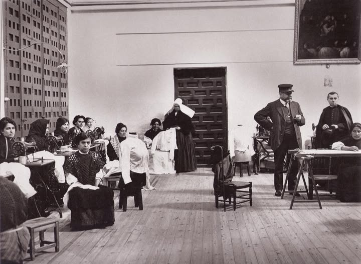
Cárcel de mujeres "La Galera" (1913) Alcalá de Henares c/ Santo Tomás de Aquino 12 foto.: Alfonso
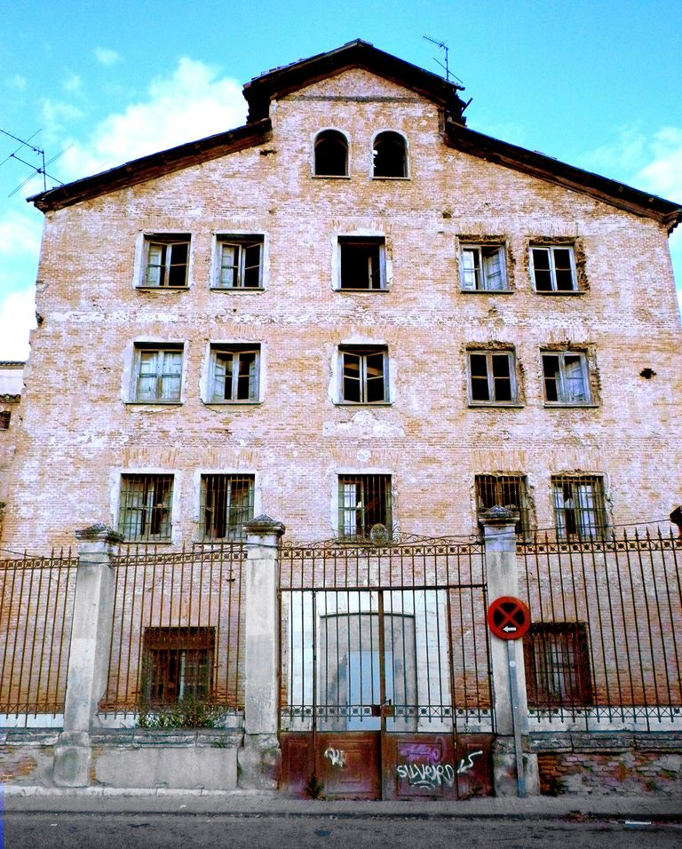
Vista de la excárcel en 2011
Arquitecto.: Tomás Aranguren (mismo Cárcel Modelo)
Cárcel de mujeres "La Galera" calle de Basilios esq Santo Tomás de Aquino
Cárcel de mujeres "La Galera" La prisión femenina para las 'irredentas' del franquismo, al borde del colapso: Dejaron pasar el tiempo a ver si acababa de caerse
Cuando en las taquillas del Metro de Madrid sólo había mujeres… y no se podían casar
Sólo se contrataba a mujeres solteras.
La Galera Teatro
Vítor (símbolo) El vítor o víctor era un monograma de la palabra latina VICTOR ("vencedor") que se inscribía en los muros de Salamanca cuando un estudiante se doctoraba
Vítor Los Pesquisidores nos cuenta la historia de los Vítor que adornan las paredes de los edificios de la Universidad de Salamanca
Vítor V-I-T-O-R, la C es una luna invertida que hace alusión al «Papa Luna» Benedicto XIII último pontífice de Aviñón en contraposición al Papa del Vaticano
Vítor el Escudo de la Victoria franquista
Vítor de Franco | Miles Hispaniae Gloriosus
Vítor Catedral de Sevilla
Las huellas franquistas continúan indelebles En Salamanca continuan
Una sentencia del TSJ de Castilla y León ha sentado precedente al instar al Ayuntamiento de Valladolid a elaborar un censo de símbolos franquistas y eliminarlos en el plazo de un mes
Escudo franquista Calle Toro 40 Salamanca
Simbología del franquismo
Cara al Sol | Himno falangista youtube
Memoria historica
debate sobre los Caídos de Pamplona el que es el segundo mayor monumento de exaltación franquista de España tras Cuelgamuros
Los españoles en Mauthausen vistos desde la lógica nazi: "Estos prisioneros nunca importaron al franquismo"
Tres responsables de los bombardeos de La Desbandá están enterrados con honores en el Panteón de la Armada
La Asociación por la Memoria Militar Democrática solicita al Ministerio de Defensa la exhumación de sus restos mortales y la retirada de las placas y lápidas de un lugar con valor simbólico y turístico
Sa Feixina, el monumento franquista recién blindado por el PP que honra a los autores de la masacre de 'La Desbandá' El monolito, considerado el mayor monumento franquista del archipiélago balear, va a ser protegido.
Cuando los emigrantes éramos nosotros La exposición 'Huir de la miseria'
recupera la realidad de miles de temporeros españoles en Europa:
Ayudaron a que la ciudadanía española que salía al extranjero conociera las libertades y derechos
Posguerra, mendigos y el Matadero de Madrid como centro de reclusión: más de 800 muertos en un solo invierno
El actual enclave cultural funcionó como encierro para personas sin hogar a partir de 1941 donde el régimen llevó a miles de pobres para ser devueltos a sus pueblos de origen o 'reeducados' en instituciones caritativas -eldiario.es
Posguerra, mendigos y el Matadero de Madrid como centro de reclusión: más de 800 muertos en un solo invierno
El actual enclave cultural funcionó como encierro para personas sin hogar a partir de 1941 donde el régimen llevó a miles de pobres para ser devueltos a sus pueblos de origen o 'reeducados' en instituciones caritativas -publico.es
El manicomio como excusa: así usó el franquismo la reclusión psiquiátrica para reprimir a mujeres tras 1936
Un libro de Montse Fajardo recupera historias de internas en Conxo, el psiquiátrico de Santiago de Compostela y hasta 1953 el único de la comunidad, y relaciona sus circunstancias con el clima de miedo y terror desencadenado por el golpe fascista y las primeras décadas de la dictadura
Lobotomías y torturas para curar la homosexualidad: cuando la psiquiatría estuvo al servicio de Franco meneame.net
La Ley de Vagos y Maleantes abrió la veda para que pudiera internarse a hombres no heterosexuales en prisiones que funcionaban a modo de centros de rehabilitación y reaprendizaje.
El caso Francisco de Fuentes y la paradoja legal que convierte al maquis en víctima y terrorista a la vez
El guardia civil muerto en una refriega en 1960 está considerada como la primera víctima del terrorismo en España en clara incongruencia con la Ley de Memoria Democrática que considera a los guerrilleros del maquis víctimas de la dictadura franquista: “Si se mezcla todo, perdemos el sentido de la historia”
Ruiz de Gordoa fue el 'cabeza de turco' de la Operación Montejurra mientras la amnistía salvaba a Fraga y Arias Navarro
Fraga organizó la movilización de 5.500 ultraderechistas que acabó con dos asesinados en Montejurra
Medio siglo de la matanza de Montejurra otro hito sangriento de la Transición y punto de inflexión para el carlismo
Documentos desvelados en 2023 implican a Manuel Fraga y otros cargos del Gobierno de Arias Navarro en una maniobra del Estado para acabar con la romería del Partido Carlista en Montejurra
a la que consideraban una concentración subversiva contra Juan Carlos I
La división del carlismo que culminó en Montejurra 1976: del Dios, Patria, Rey al Socialismo, Federalismo, Autogestión
7 fundadores de Alianza Popular y 7 ministros franquistas
Expediente Berlanga: tres películas que la censura le prohibió
Jueces parciales (y II) Los efectos del trato moderado, y hasta respetuoso, en la Transición de una parte de la magistratura ante los deltos del fascismo subsisten en las respuestas jurisdiccionales
La tragedia de Vitoria, el 3 de marzo de 1976 Dicho día, los trabajadores de Forjas Alavesas celebraban un encuentro sobre su futuro y, para ello, se reunieron en la Iglesia de San Francisco de Asís.
La trama política del 23F y las listas para fusilar inmediatamente: escritores, músicos, artistas y periodistas Delibes, Gala, Marsé, Aute, Miguel Ríos, Ana Belén, Bardem, Pilar Miró, Sacristán, Forges, Milá… una lista interminable
Del bebé asesinado por la Guardia Civil al taxista al que mató la Triple A: las víctimas de la violencia ultra y policial entre 1979 y 1983
El listado incluido en el informe recién publicado por el Gobierno comprende 63 asesinatos identificados como violencia heredera del franquismo a pesar de que la Constitución ya había entrado en vigorEl Gobierno reconoce por primera vez 63 asesinatos franquistas a manos de la Policía y la extrema derecha entre 1979 y 1983
“asunto Gabaldón” ¿La masonería infiltrada en la cúpula del Régimen?
“asunto Gabaldón” ¿La masonería infiltrada en la cúpula del Régimen? -web.archive.org
Contubernio de Múnich – Movimiento Europeo
El IV Congreso del Movimiento Europeo en Múnich o también llamado Contubernio de Múnich de 1962
fue una reunión de casi ciento veinte españoles opositores al franquismo
El Contubernio de Múnich 60 años después: la antesala de la Constitución española
Contubernio Los seguidores de Francisco Franco, por otra parte, bautizaron como Contubernio de Múnich al IV Congreso del Movimiento Europeo que se desarrolló en la ciudad alemana en 1962. La calificación intentó minimizar la participación de más de un centenar de políticos de España que se oponían al franquismo.
Plataforma 2025 Una especie de manifiesto organizado por algunos (o no tan algunos) ilustres personajes que quieren rememorar la dictadura de Franco
Ni paz ni prosperidad con Franco: las mentiras del manifiesto firmado por Tejero en apoyo al dictador, una a una
El 'bibliocausto' español, la quema de libros por el franquismo durante la guerra y la posguerra
Nicolás Sesma: “Franco firmó una bajada de pantalones con EEUU mientras hablaba de orgullo nacional”
Julián Casanova publica una biografía sobre Franco: "Vox no va a destruir el parlamento, lo va a utilizar"
Ángel Viñas desmonta 'Los mitos del 18 de julio' sobre el levantamiento militar de 1936
Ángel Viñas.: “Los papeles han demostrado que Franco fue un asesino, un mangante y un traidor”
Ángel Viñas.: La gran hambruna española contemporánea que no está -¿todavía?- en Wikipedia
Ahora, cuando va a cumplirse el 50 aniversario de la muerte de Franco, todavía exaltado en ciertos medios y en las redes sociales, es imprescindible conocer este episodio que fue producto de la dictadura franquista tras la guerra
Ángel Viñas y Guillem Martínez.: La importancia del petróleo de EEUU para Franco: “La República lo tuvo todo en contra”
En El oro negro de Franco (Crítica), los dos investigadores relatan cómo la Standard Oil y Texaco apuestan, saltándose la política de no intervención, por el bando sublevado y, junto con el apoyo de Hitler y Mussolini son fundamentales para decantar el curso de la guerra
OUTSIDERS.ESP | La otra cara de la historia @outsidersesp
El Prado finaliza su investigación sobre el expolio franquista: tiene 70 obras incautadas
Los 2.203 edificios de Madrid que destruyeron las bombas de Franco
Nueve joyas arquitectónicas imponentes de Madrid que se perdieron para siempre en la Guerra Civil
La guerra olvidada de Madrid: los edificios destruidos por los bombardeos de los que nadie se quiere acordar
Los curas ASESINADOS por franco
El episodio de Badajoz | General Yagüe
Manipulación fascista de los simbolos Españoles
Las cinco rosas falangistas tumba de Franco [ver en Brave]
Revisionismo y memoria | historiadores
Historia mínima de la Guerra Civil española
Tina Paterson colorea las fotos del franquismo “para no pasar página”
Virgen antes del matrimonio, sumisa en la relación íntima y madre abnegada
el franquismo fue un régimen profundamente misógino
El trabajo forzado de los 'rojos' en campos de concentración que Franco usó para erigir “la Nueva España”
La persecución y destrucción de un obispo antinazi acusado de pederastia en la España de Franco
50º aniversario de su muerte, el caso del obispo de Calahorra-La Calzada Fidel García Martínez
El día en que Franco lloró La creciente y oportunista separación de la Iglesia y la dictadura franquista culminó con la amenaza del cardenal Tarancón de excomulgar al dictador
Los centros de menores del franquismo regidos por Carmen Polo: monjas, moral católica, castigos y control de virginidad
Pueblos de Colonización | el objetivo de Franco
Los pueblos de Franco la política de colonización del franquismo para reubicar a familias campesinas
"Pueblos de Colonización. Miradas a un paisaje inventado" MUSEO ICO
Pueblos de colonización: deja de llamarlos pueblos de Franco
"Pueblos de Colonización. Miradas a un paisaje inventado"
Recuerdo de esas 60.000 familias que colonizaron esos nuevos emplazamientos.
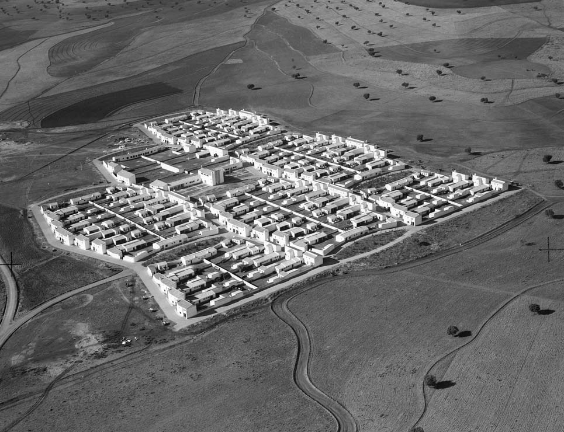
Pueblos de colonización: Vista aérea del pueblo de Villalba de Calatrava (Ciudad Real), proyectado por José Luis Fernández del Amo, 1955
Vista aérea del pueblo de Villalba de Calatrava (Ciudad Real), proyectado por José Luis Fernández del Amo, 1955el SUT (Servicio Universitario del Trabajo fue creado durante el franquismo para acercar el mundo obrero a los estudiantes universitarios
Ramón Masats (1931-2024) Memoria colectiva manchega | encalado de añil y blanco fachadas
Eugenio Merino se lleva sus neveras lejos de España Autor de Franco en una nevera Coca-cola
Franco en una nevera Coca-cola
ELEMENTOS DE CAMBIO EN LA ETAPA FINAL DEL FRANQUISMO
CASO MATESA Separación Jefaturas ASESINATO DE CARRERO BLANCO
La CIA y el asesinato de Carrero Blanco – Rebelion
Entrevista Kissinger con Carrero Blanco día antes de su atentado
Libro de Charles Powell, El amigo americano. España y Estados Unidos, de la dictadura a la democracia. transicion.org
La verdad oficial, en los años cuarenta. (y II) - Kazetariak
Operaciones encubiertas de la CIA: técnicas de interrogatorio, control mental y experimentos con drogas
La modernización de la derecha radical (Primera parte) - Regeneración Libertaria
La modernización de la derecha radical (Segunda parte) - Regeneración Libertaria
1 de marzo de 1951: el despertar del movimiento obrero en la dictadura
Carlos García Juliá, autor de la matanza de Atocha, cabeza de lista por la Falange en Bilbao
El conde de Mayalde, un filonazi en la alcaldía de Madrid durante 13 años
Alcalde de la ciudad entre 1952 y 1965 conocido pro-nazi que se preciaba del trato con Heinrich Himmler, El falangista, fue responsable de la DGS en la inmediata posguerra, facilitó la acción de la Gestapo en la ciudad y encabezó la elaboración de una lista de judíos residentes en España
LA OPOSICIÓN AL RÉGIMEN.
Terrorismo político tanto de los grupos ya mencionados (E.T.A., F.R.A.P. y G.R.A.P.O.) como de los grupos fascistas Guerrilleros de Cristo Rey
Los más de 90 crímenes de odio en la historia reciente de España, en un mapa: de Samuel Luiz a numerosos sintecho Los periodistas Miquel Ramos y David Bou documentan desde hace quince años todas las víctimas mortales relacionadas con la xenofobia, la LGTBIfobia o la aporofobia desde los 90
LA OPOSICIÓN AL RÉGIMEN.
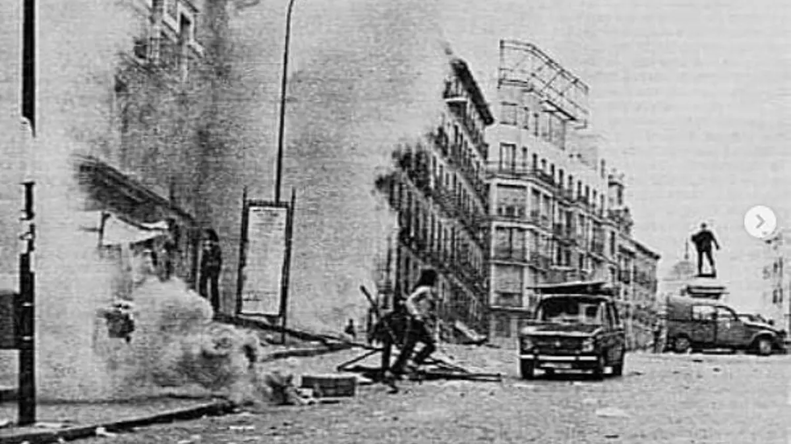
Disturbios en El Rastro en 1977 por ataques de la extrema derecha
La Transición, con la eclosión contracultural y las razias de la extrema derecha
Ya eso lo he vivido en primera persona, aunque de una manera un tanto marginal. Durante los años 1978 y 1979 hubo unos periodos bastante duros. En la parte de Cascorro comenzaron a ponerse puestos políticos de izquierda o de grupos como la COPEL (Coordinadora de Presos en Lucha). Hay un documental del NO-DO que lo muestra, evidentemente con sesgo ideológico. Aparece cómo la gente se arremolina en torno a los puestos políticos, muchos de quienes están allí llevan megáfono y cuentan lo que había pasado en el ámbito de la movilización política de su sector. En la grabación se dice que no tienen apoyo de los vendedores, pero era mentira.
Esto sucede en el contexto de la reacción de los grupos de ultraderecha, sobre todo los Guerrilleros de Cristo Rey, que actuaban en connivencia con la policía. Iban con todo tipo de cadenas y pegaban a diestro y siniestro. A vendedores, compradores y a los miembros los tenderetes de propaganda política. La Policía siempre acudía como 15 minutos tarde a pesar de que había un coche de policía a 500 metros
Lo viví por las carreras que se organizaban desde Cascorro hacia abajo. Bajaban por la Ribera de Curtidores, pero también llegaban por las calles anexas y hasta el Campillo, donde yo vendía. Tenía 10 años, 12 como mucho, y durante cuatro o cinco semanas recuerdo estar con las típicas lecheras de los grises al lado de nuestros puestos. Estábamos atemorizados y fue bastante dramático.
Las 8 mentiras económicas sobre el franquismo que no te debes creer
Un documental muestra con archivos inéditos 'fake news' del franquismo que aún perduran
La hambruna española borrada por Franco que no aparece en los libros de historia Lo que ocurrió en los años 40 no fue solo un periodo de escasez o necesidad sino una auténtica hambruna de graves efectos, a pesar de que el franquismo intentó ocultarlo y fomentó un discurso autoexculpatorio youtube
La gran hambruna española contemporánea que no está -¿todavía? Wikipedia
Ahora, cuando va a cumplirse el 50 aniversario de la muerte de Franco, todavía exaltado en ciertos medios y en las redes sociales, es imprescindible conocer este episodio que fue producto de la dictadura franquista tras la guerra -Ángel Viñas
Los años del hambre El Blog de Acebedo
Los colaboradores de Franco en el golpe de 1936 que perderán sus títulos nobiliarios
“Café, que le den café, mucho café”, la orden de Queipo de Llano para fusilar a Lorca
El fúnebre acrónimo, “Camarada, arriba, Falange Española”, consigna de los golpistas para mandar fusilar
VIII Demostración Sindical en Mayo de 1963 Fiesta del Trabajo estuvo prohibido desde la Guerra Civil para a mediados de los años 50 cambiar dicha celebración por otra de corte más religioso con la cual se festejaba a San José, patrón de los trabajadores, en la popularmente llamada Festividad de San José Obrero. Estas demostraciones sindicales giraban en torno a espectáculo deportivos, gimnásticos, musicales y de folclore popular en los cuales los trabajadores hacían diversas exhibiciones en el césped del Santiago Bernabéu
Actividad física y juventud en el franquismo (1937-1961)
Fotos inéditas de la presencia nazi en España: “El franquismo fue una anomalía fascista en Europa”
Así acogía el franquismo a los nazis: la afinidad de Falange y las Juventudes Hitlerianas
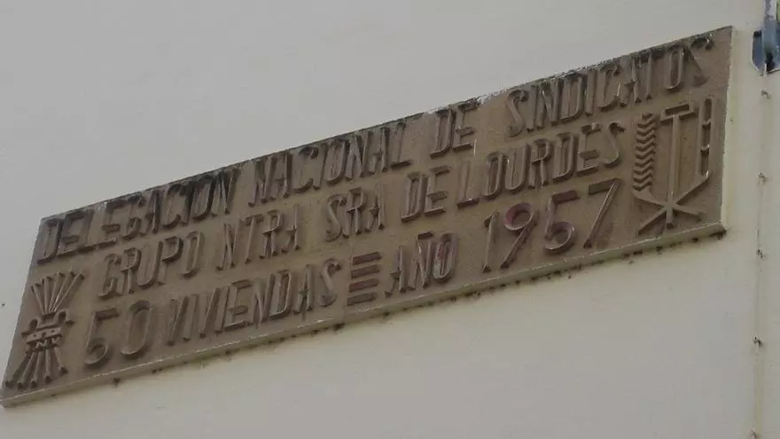
El yugo y las flechas del franquismo sobreviven en las fachadas de España

Instituto San Isidro | Escudo franquista
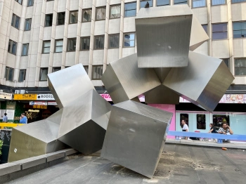
Plaza Emilio Jimenez Millas (Los Cubos) (1972) erróneamente se cree Los Cubos
El nombre real seria Plaza Emilio Jiménez Millas (Plaza de José Moreno Villa en 2017) nombre de un histórico militante de Falange Española e intimo amigo del que fue alcalde de la ciudad, Arias Navarro con el que compartía pasión por la caza.
Jiménez Millas nacido en Madrid en 1915, fue junto a su hermano uno de los primeros fundadores de Falange Española. Durante el alzamiento militar del 18 de julio, participo activamente en la defensa del Cuartel de la Montaña y mas tarde se enroló en las fuerzas de aviación franquista y participo en la Patrulla Azul del famoso piloto García Morato. Terminada la guerra, tuvo una larga carrera política, con varios cargos en la Delegación Nacional de Sindicatos, como procurador en Las Cortes y concejal en el ayuntamiento de Madrid.
Ultraderecha.:
Ultraderecha España.:
Hazte Oir | El Yunque.:
Abogados Cristianos.:
Trump.:
Antifascistas.:
Miquel Ramos@Miquel_R
Periodista. Autor d''Antifascistas' (@Capitan_Swing) 'De los neocón a los neonazis', 'Dios, Patria Yunque' i 'Crímenes de Odio'
Activista contra la desinformación digital @JulianMaciasT
Pandemia digital @JulianMaciasT Telegram
VerificaTHOR - Fact-Checking Inteligente
Cristina García: “Hay discursos hoy que siguen a rajatabla los principios de la propaganda nazi”
Fundadora y presidenta de la Asociación Triángulo Azul Stolpeirsteine de Andalucía habla de la labor de recuperación de la historia de los deportados a campos de concentración
Asociación Triángulo Azul Stolpeirsteine de Andalucía
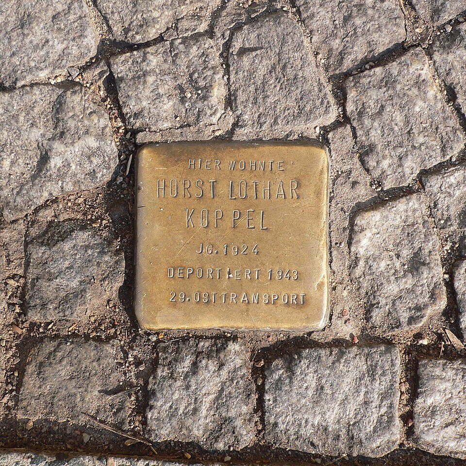
Stolpersteine (piedras de la memoria) son monumentos a la memoria de los españoles asesinados, deportados, expulsados o llevados al suicidio por causa del nazismoEl proyecto stolpersteine creado por el artista alemán Gunter Demnig, se ha expandido a más de 75,000 piedras de la memoria en 20 países.
Stolpersteine a José Fontanet Moreno P.º de Extremadura, 150 (GILGO)
Stolpersteine Gran Vía 9 (cerca registro CAM)
Stolpersteine Gran Vía 9 (cerca registro CAM)
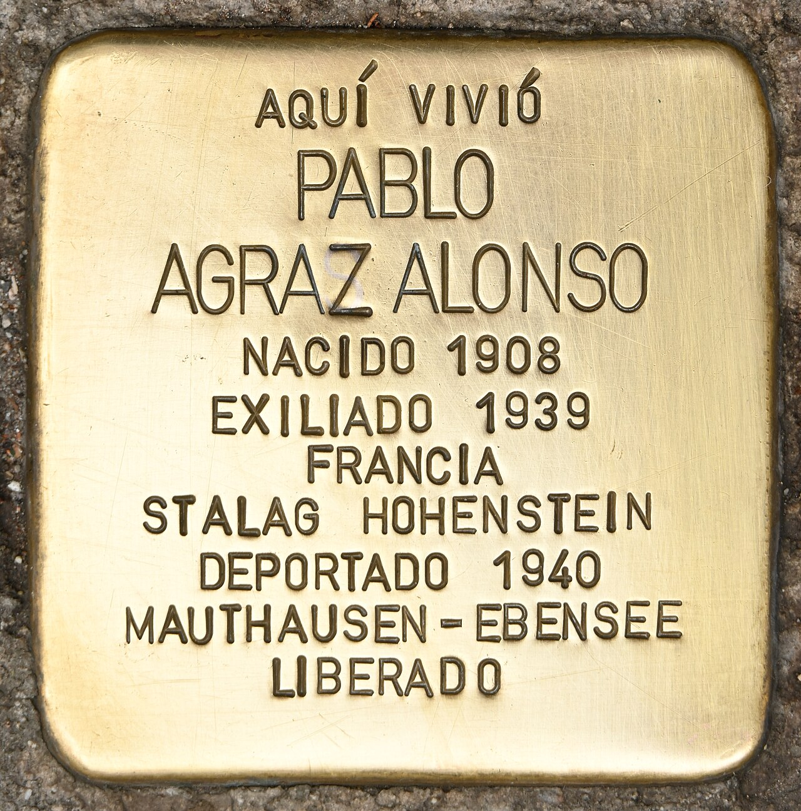
Stolpersteine Pablo Agraz Alonso Cl. de José Antonio de Armona, 4, Arganzuela (Detrás Price)Stolpersteine en Madrid wikipedia.org
 Triangulo azul "S" Un triángulo invertido con fondo azul y la S en su interior (Spanier)
Triangulo azul "S" Un triángulo invertido con fondo azul y la S en su interior (Spanier) Exiliados republicanos en el campo de Amélie-les-Bains
Exiliados republicanos en el campo de Amélie-les-BainsEl indigno recibimiento de los republicanos españoles en Francia cumple 75 años
Ultraderecha España.:
Dog whistle | Silbato de perros: el arma de la ultraderecha. Por qué es tan efectiva y ejemplos para identificarla
"Ya hemos pasao", "Hacer España grande otra vez", Abascal citando a Ramiro Ledesma en el Congreso de los diputados o que declarase en ese mismo lugar que el entonces gobierno de coalición PSOE-Podemos "es el peor gobierno en 80 años".
Los tres símbolos nazis que tiene grabados el atacante de Cristina Kirchner
Conoce los símbolos de la extrema derecha
Cómo el mundo amó la esvástica, hasta que los nazis se la apropiaron
Simbología en el Deporte Prohibida PDF simbologiamotivodesancion.pdf
Cómo identificar la simbología «secreta» de los grupos neonazis: La importancia de lo oculto
Los números que más se usan por los grupos de ideología neonazi contienen continuas referencias a Hitler, así, el 4/20, 422 o 4:20 corresponden al día y mes de nacimiento, el 18, en relación al puesto que en el alfabeto tienen las letras A y H -su nombre y apellido-, y el 88 a la HH de HEIL Hitler | el 33 por el año que Hitler llegó al poder.
se usan acrónimos como HMF para referirse al saludo nazi “Heil Mein Führer”, o la H triplicada (HHH) en referencia a los nombres de los tres nazis más importantes que han existido, según estos grupos, Himmler, Hess y el propio Hitler A.C.A.B. | All Cops Are Bastards, o en castellano, «Todos los policias son unos bastardos» y que el mismo alego que significaba All Cats Are Beautiful. («Todos los gatos son bonitos») neonazis, suele referirse a la mitología y cultura nórdica -de la que les gusta pensar que descienden-, hayan nacido en Berlín o en Cuenca, tales como las runas, efigies de guerreros vikingos o sus armas de guerra, y sobre todo la de los dioses nórdicos y sus símbolos , como el cuervo negro que identificaba a Odín
¿Qué símbolos nazis están prohibidos en Alemania ? ¿Y cuáles no?
La lista de símbolos nazis prohibidos la encabezan la esvástica, las imágenes de Hitler, las "SS Sigrune”, o runas de la victoria de las patrullas de ataque nazis SS”, y el "saludo de Hitler" En 1983, se añadió el "saludo de la resistencia" o "Saludo de Kühnen", del "Frente de Acción de nacionalsocialistas / Activistas Nacionales" la cruz céltica del prohibido "Movimiento Socialista Popular/ Partido del Trabajo"
el Triángulo de Comandancia de la "Federación de jóvenes alemanas"
las condecoraciones del partido NSDAP, el símbolo de la calavera de las unidades SS del partido nazi
los estándartes del Führer, las banderas de guerra del III Reich, la Orden de la Sangre entregada a los participantes del intento de golpe de Estado en Múnich, brazaletes con la esvástica, dagas de las SS y la insignia de cabezas rapadas con runas de la victoria
 Las camisetas de la vergüenza que se venden en la Playa de Palma
Las camisetas de la vergüenza que se venden en la Playa de PalmaEl novelista francés Éric Vuillard sacó a la luz en su libro "El orden del día", de 2017, cómo Adolf Hitler siendo canciller, convocó a 24 grandes industriales alemanes para que financiasen su campaña para las legislativas, dueños de marcas tan conocidas como Open, Siemens, Volkswagen, Bayer, BASF, Thyssen, Krupp, BMW, Dr. Oetker… a quienes ofrecía, a cambio, aprobar para ellos normas antisindicales que maximizaran sus ganancias.
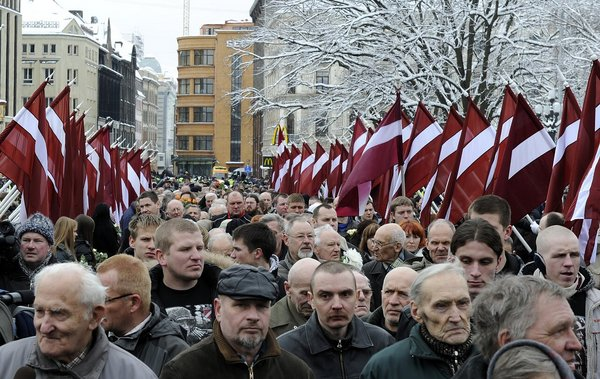
La manifestación que honra cada año en Riga a la Legión letona nazi. El carnicero de Riga es un héroe letón
Una parte de la población sigue resistiendo en difíciles condiciones, pero la canción de Horst Wessel que cantaban las escuadras nazis sigue fascinando a demasiados ciudadanos letones
Los 400 grupos de extrema derecha que se organizan en Europa
The Walk-in y los orígenes del fascismo británico
Oswald Mosley un aristócrata inglés que, después de pasar por el parlamento británico en las filas de los partidos conservador y laborista
creó, en 1932, la Unión Británica de Fascistas (British Union of Fascists, BUF) que en 1936 cambió el nombre por el de Unión Británica de Fascistas y Nacionalsocialistas (British Union of Fascists and National Socialists) que llegó a tener 50.000 miembros y un grupo paramilitar, la Fuerza de Defensa Fascista conocidos como los Blackshirts
Las simpatías de Mosley por el nazismo alemán eran tan evidentes que se casó por segunda vez en la residencia de Joseph Goebbels con Adolf Hitler como invitado.
En 1940, tras el inicio de la Segunda Guerra Mundial, Oswald Mosley fue encarcelado por las autoridades británicas, y su partido fue proscrito. La popular serie Peaky Blinders rescató su figura
Filippo Tommaso Marinetti fundador del movimiento futurista, la primera vanguardia italiana del novecento y que sirvió como base para el fascismo de Mussolini
El manifiesto futurista de Filippo Tommaso Marinetti publicado en 1909 en Le Figaro y que se considera precursor del fascismo que conquistó el poder en Italia de la mano de Benito Mussolini en 1922
Aquel manifiesto que sembró las bases del fascismo presentaba una serie de puntos 11 en total que encajan muy bien con la Administración Trump y con los valores que preconiza cada día Hegseth
"No hay belleza sino en la lucha", decía el manifiesto: "Ninguna obra de arte sin carácter agresivo puede ser considerada una obra maestra; queremos glorificar la guerra —única higiene del mundo—, el militarismo, el patriotismo, el gesto destructor de los anarquistas, las ideas por las cuales se muere y el desprecio por la mujer; queremos destruir y quemar los museos, las bibliotecas, las academias variadas y combatir el moralismo, el feminismo y todas las demás cobardías oportunistas y utilitarias".
ultra del Betis que agredió en Bilbao recibió una feroz paliza
HTR, A.C.A.B., O.R.I.O.N, EH, NS, 2YT4U... ¿Sabes que significan estas siglas y por qué están prohibidas en los campos de fútbol?
Guardia Civil detiene a once líderes de un grupo paramilitar de ideología nazi en varios puntos de España
Argentina, ante unas primarias marcadas por la extrema derecha: "No creo que el economista ultra Javier Milei tenga opciones, pero ha derechizado la escena" convergencia. Muchos líderes de extrema derecha se conocen personalmente.
La Conferencia Política de Acción Conservadora de la derecha del Partido Republicano, hoy dominada por el trumpismo Atlas Network y el Foro de Madrid convocado por Vox para ejercer influencia en Hispanoamérica, son instancias de coordinación.
los 3 presidentes de la red Atlas Network: Piñera, Lasso y Abinader
Anticomunistas, ultracapitalistas y admiradores de Díaz Ayuso: Atlas Network prepara su desembarco en Madrid
Atlas Network el think tank ultraliberal que gana terreno en la UE de la mano de la agenda anticlimática empieza a buscar aliados y abrir puertas en la UE en el afán de retroceder la justicia social y las políticas ambientales
Sobre el premio de la Liberty International la "Antorcha de la Libertad" a Isabel Díaz Ayuso
organización de Dallas, uno de sus aliados es Atlas Network que está detrás de todos líderes ultras de Sudamérica
“Inútiles radicales” y “viejos meados”: el TikTok de Milei se le vuelve en contra para la segunda vuelta de las presidenciales argentinas El candidato ultra se ve obligado a seducir a quienes calificó como “viejos meados”, “inútiles radicales”, “excrementos humanos socialistas”, “terroristas”, “el imbécil que está en Roma” y mujeres que no equiparen el aborto al “asesinato de bebés”
Ayuso como Milei
“Abrir los ojos” En EEUU, Brasil o, recientemente, en Polonia o Argentina, los amplios paseos que se iban a dar los líderes populistas y ultra se han visto cercenados por un refuerzo de partidos más centrados o el fallo aritmético de las derechas unificadas
Para Ayuso de parte de Milei su amigo de Liberland
La cúpula de Atlas Network Latinoamérica en los #PandoraPapers:
Roberto Salinas- Director
Vargas Llosa- FIL
Legionarios de Cristo- IADG formación de líderes de Aznar
Durán Barba- asesor de Lasso y Macri
El anfitrión del homenaje ultraliberal a Javier Milei en Madrid repesca a Lasquetty para su universidad privada El ex gurú de Ayuso y Aguirre, “director de Formación Continua” en la Universidad de las Hespérides del lobbista y empresario canario Gabriel Calzada
Grupos ultraderechistas Antonio Maestre
Los partidos históricos de ultraderecha pierden el 80% de los votos en las europeas tras la irrupción de Vox
Los votos de coaliciones integradas por Falange, Democracia Nacional o Alternativa Española han pasado de 69.272 en 2014 a 11.798 en los comicios del 26M
Nazis a la moda en Alemania: un nuevo envase para el mismo veneno
Cómo detectar las señales secretas de la estética de extrema derecha
camiseta Lonsdale bajo una chaqueta con la cremallera subida, mostrando las letras NSDA
[acrónimo del Partido Obrero Nacionalsocialista en alemán] y si te para la policía, te la desabrochas y se lee simplemente “Lonsdale”
De Andorra a Madrid con fondos cripto: quién está detrás del foro que juntará a Milei con agitadores y conspiranoicos
Madrid Economic Forum surgió en 2023 vinculado al Andorra Economic Forum ambos organizados por las firmas andorranas Racks Labs y Abast Global
La primera es una consultora tecnológica vinculada a Víctor Domínguez polemista conocido en redes sociales como Wall Street Wolverine por sus críticas al Gobierno o promover la emigración fiscal a Andorra de los influencers. Abast Global es un despacho de abogados especializado en gestionar traslados de residencia y creación de sociedades en el Principado.
Un evento auspiciado por la principal plataforma cripto española Bit2Me que se celebrará mientras continúa la investigación de la presunta estafa de Libra una criptomoneda que se hundió en febrero justo después de que Milei la promocionara.
el Madrid Economic Forum estará dominado por los debates que ha popularizado el trumpismo y la nueva extrema derecha estadounidense, como el antiglobalismo, las críticas a la democracia representativa y los servicios públicos.
Vito Quilés
Delegación del Gobierno en Madrid sanciona a Vito Quiles 10.401 euros por desobedecer a la Policía durante la marcha feminista del 25N
PP y Vox reparten más de 135.000 euros a Vito Quiles, Javier Negre o Ndongo desde la Diputación de Ciudad Real
El digital OKDiario dirigido por Eduardo Inda y conocido por su estilo sensacionalista y la publicación recurrente de informaciones falsas o no verificadas, ha recibido 39.931,48 euros. Muy cerca en la lista figura El Debate publicación impulsada por la Asociación Católica de Propagandistas a través de Ediciones Católicos y Vida Pública S.L.U. que ha obtenido 31.059,55 euros. El listado de medios beneficiados se completa con Periodista Digital dirigido por Alfonso Rojo y del que forma parte Bertrand Ndongo con 15.050,99 euros; Libertad Digital fundado por Federico Jiménez Losantos con 6.879,85 euros; y The Objective que ha recibido 11.997,99 euros con IVA.
Piden explicaciones a Diputación de Cádiz por los 25.000 euros de publicidad concedidos al canal de Vito Quiles
Revuelta.:
Revuelta organización juvenil satélite de Vox
Pintado, también vinculado al blog agitador de derechas "HerQles" el que intervino por primera vez en nombre de Revuelta como portavoz en la protesta de Madrid.
Se acabó el amor entre Vox y Revuelta, la organización juvenil que hunde sus raíces en El Yunque
La organización juvenil patriota Revuelta ha impulsado una acción simbólica en el madrileño parque de las Cruces para recuperar los colores de la bandera nacional en el graderío del auditorio, donde hasta hace poco se exhibía una gran bandera republicana.
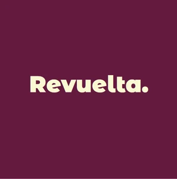
Revuelta, Desokupa y Núcleo Nacional: la sombra de los grupos nazis envuelve los altercados contra Sánchez y los reyesrevuelta.info
Qué es el grupo Revuelta que ha promovido manifestaciones en Madrid y Barcelona contra la amnistía
Camiseta División Azul
Núcleo Nacional Interior aceptó en agosto la inscripción legal del grupo nazi que alienta protestas contra Sánchez por las inundaciones
Núcleo Nacional @nucleonesp
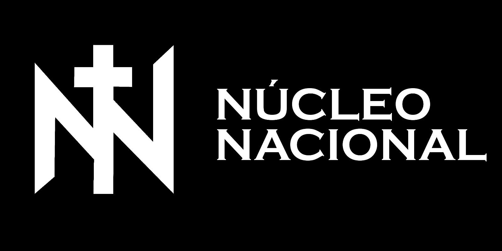
NÚCLEO NACIONAL nucleonacionalesp.com
Nace Núcleo Nacional el movimiento neofranquista que llama a defender la raza española
La Guardia Civil investiga a Núcleo Nacional por llamar a la “lucha conjunta” en la calle contra la “invasión” extranjera
Hitler, defensa de la raza y Reconquista: la expansión de Núcleo Nacional el grupo que une a “nazis, franquistas y falangistas”
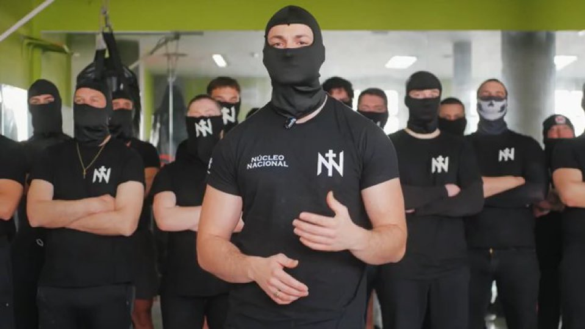
Burka de Núcleo Nacional
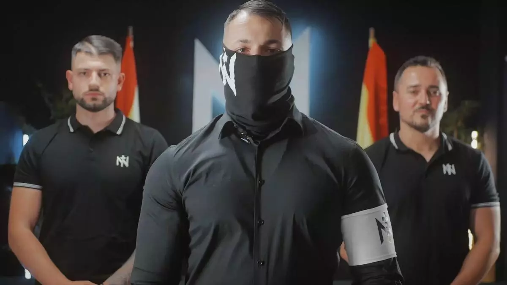
Los portavoces del grupo neonazi Núcleo Nacional en el vídeo en que comunican su transformación en partido político.
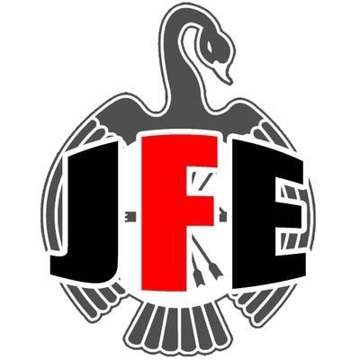
Juventudes Falangistas de España @JFalangeMovimiento Nacional @MovimientoNac_
Herqles @herqles_es
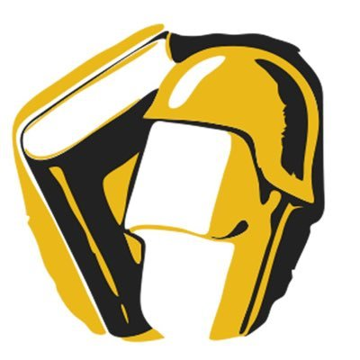
Espacio Ardemans calle de ardemans 66 @EspacioArdemansHacer Nación @HacerNacion
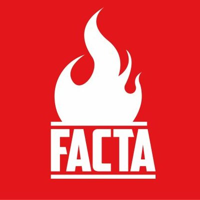
FACTA @FactaESP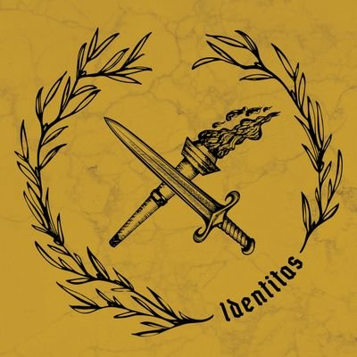
COMUNIDAD IDENTITAS @_Identitas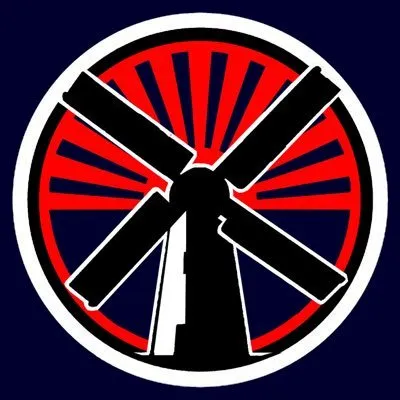
Bastion Frontal logotipo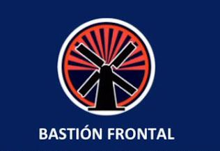
Bastión Frontal" Este nuevo grupo no visten como skin heads, con botas y tirantes, sino que optan por la estética casual. Así, más allá de los tautuajes que ocultarían bajo la ropa, llevan prendas de la marca Stone Island, con un logotipo parecido a la a la cruz céltica o celta usada por los nazis, y camisetas Helly Hansen que en su marca tiene las iniciales HH, que para los ultras significa Heil Hitler. Stone Island logotipo parecido a la a la cruz céltica o celta usada por los nazis
Stone Island logotipo parecido a la a la cruz céltica o celta usada por los nazis
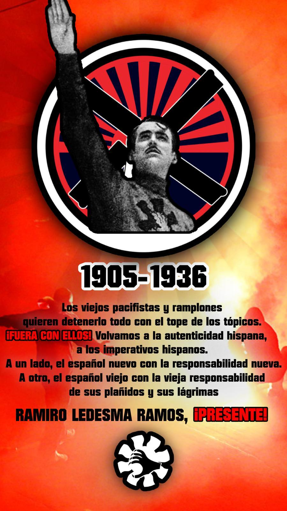
Ramiro Ledesma | Bastión Frontal SevillaLos últimos neonazis detenidos en Catalunya hablaban ya de atacar mezquitas y sinagogas
Atacan con pintadas nazis la sede de Podemos en Torrejón de Ardoz
HTR o AHTR (Hitler Tenía Razón) Proviene del inglés "HITLER WAS RIGHT"
AHTR (Adolf Hitler Tenía Razón)
A.H.T.R. (Adolf Hitler Tenía Razón), el tatuaje que retrata al ultra del Betis que agredió en Bilbao
Movimiento identitario nacionalismo étnico de extrema derecha
originario de Francia y presente principalmente en Europa y Norteamérica
Movimiento Identitario
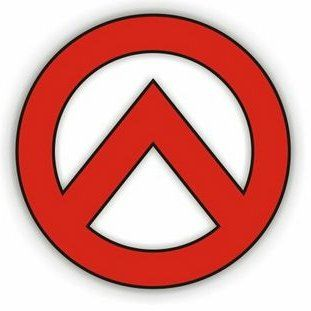
Generación Identitaria (España)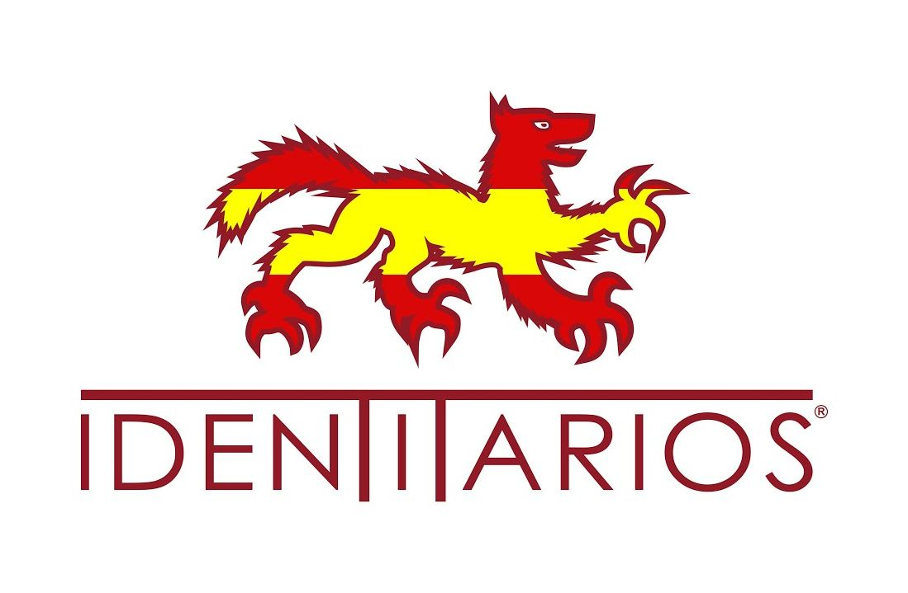
Identitarios (España)Viva 22 | Plataforma 711 el cabo suelto que evidencia el vínculo de Vox con el grupo que convoca protestas contra el PSOE
Condenado a 3 meses de cárcel el marido de Cristina Seguí inspector jefe del CNP, por pegar a 2 policías locales en Benidorm
Cristina Seguí | fundadora de Vox y presidenta de Gobierna-te
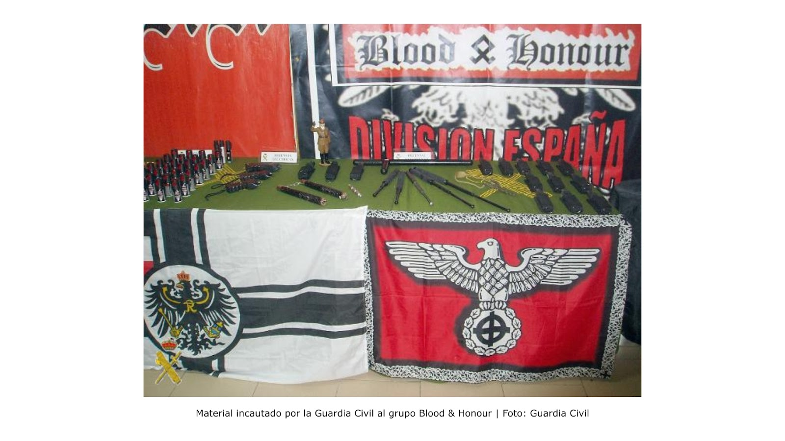
Blood & HonourUn falangista asesora a activistas pro-Putin en marchas “antifascistas”
Juan Antonio Aguilar —el verdadero nombre de Ignacio Aguirre ha concurrido entre 1979 y 2004 en varias listas electorales de Falange Española de las JONS Plataforma España 2000 y el Movimiento Social Republicano (MSR) todas ellas formaciones de extrema derecha.
Vox minimiza los antecedentes neonazis, pro Putin y antisemitas del nuevo líder de su sindicato " antecedentes pro Putin y antisemitas, que no ha negado El portavoz del partido de Abascal (Jordi de la Fuente) alega que lo importante es que no ha militado en ningún grupo independentista catalán
Vox ha salido este lunes en defensa de Jordi de la Fuente exdirigente del partido neonazi MSR (Movimiento Social Republicano) para quien el fiscal pide dos años y dos meses de cárcel por el asalto a un centro de menores inmigrantes en El Masnou (Barcelona) en julio de 2019, que el próximo sábado se convertirá en el nuevo secretario general del sindicato ultra Solidaridad
Vox minimiza los antecedentes neonazis, pro Putin y antisemitas del nuevo líder de su sindicato " antecedentes pro Putin y antisemitas, que no ha negado
(enlace proxy smry.ai/proxy)
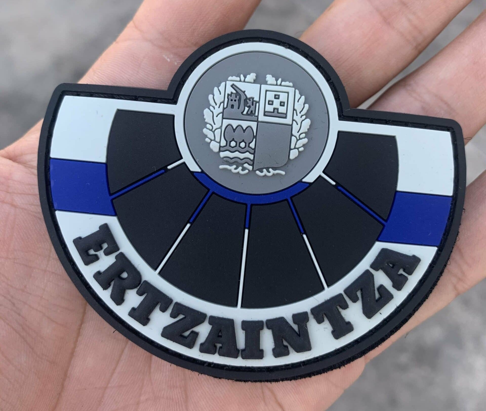
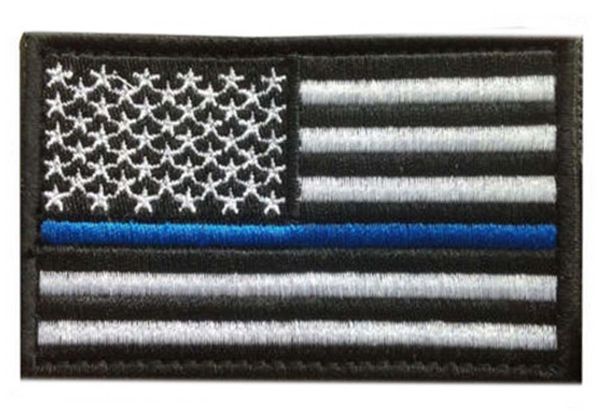
Ertzainas luciendo este tipo de parches en la zona lumbar.
Imitación ERTZAINTZA de la simbología del movimiento ultraderechista policial estadounidense Blue Lives Matter que surgió como contestación al Black Lives Matter, que protestaba contra la violencia racista policial.
Condenado a 3 meses de cárcel el marido de Cristina Seguí inspector jefe del CNP, por pegar a 2 policías locales en Benidorm
Cristina Seguí | fundadora de Vox y presidenta de Gobierna-te
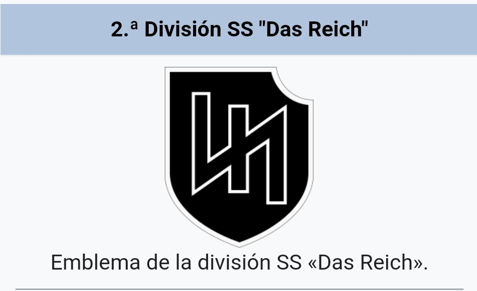
Emblema de los nazis de Azov y de la 2ª Panzer Division Das Reich, una de las más famosas y crueles de las Waffen SS
Ku Klux Klan grupo supremacista blanco estadounidense
Creado en el siglo xix, inmediatamente después de la guerra de Secesión por confederados afines al Partido Demócrata del sur
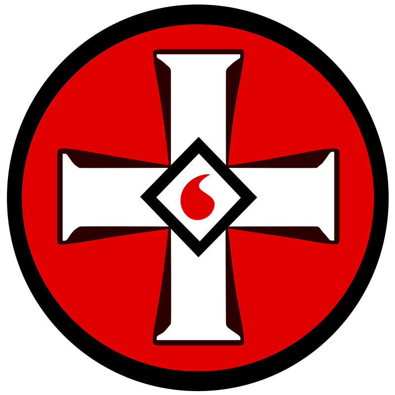
Ku Klux KlanUnga Unga Army el ejército digital de la extrema derecha antifeminista
Cañas por España twitter
Los 11 principios de la propaganda nazi de Joseph Goebbels
Manifestante Jusapol 2018 - Manifestante Pro-Trump 2021
Movimientos sociales neofascistas: la extrema derecha más allá de Vox
medios vinculados a VOX como HerQles, Antiprogre o Informe 25
Alvise Pérez información y bulos, es de ultraderecha
Así ha repartido Almeida la publicidad del Ayuntamiento a medios afines y de extrema derecha
Argumentario negacionista del cambio climático de Vox: “No vamos a malgastar más dinero en esta estafa”
VOX y su argumentario contra el cambio climático: “No vamos a malgastar más dinero en esta estafa”
Falacia de evidencia incompleta | Cherry picking (‘recolectar cerezas’) seleccionar lo mejor de algo
Nueve mitos (desmontados) a los que da alas el negacionismo de la violencia machista
Seis meses con una ex de Vox al frente de la Educación en Murcia: "Es un auténtico educacidio"
Milicias Falange de la Sangre y posteriormente llamadas Primera Línea
La Falange desconocida y vilipendiada | Centurias, Banderas, Tercio
La Primera Línea de la Falange contra la República PDF
Manipulación fascista de los simbolos Españoles
Las cinco rosas falangistas tumba de Franco [ver en Brave]
Fidesz-Unión Cívica Húngara -Partido Extrema derecha Viktor Orbán Hungría
Conspiración golpista para el 27 de octubre de 1982 PSOE gana elecciones
Conspiración golpista para el 2 de junio de 1985 Con Felipe Gonzalez Presidente
Israel y la extrema derecha: política y mesianismo
Antisemitismo | judaísmo | sionismo
antisemitismo sionista o sionismo antisemita es el apoyo por antisemitas al sionismo y al Estado de Israel.
jewishvoiceforpeace.org Judios de izquierda, movimiento de base, multirracial, interclasista e intergeneracional de Estados Unidos. Judíos.
El lobby sionista ACOM (Acción y Comunicación sobre Oriente Medio) que se define como organización española que promueve la relación entre España e Israel y lucha contra el antisemitismo trabajando con gobiernos, partidos y sociedad civil. Ha publicado en su cuenta de X una amenaza de muerte a todos los españoles que estos días han alzado la voz contra la barbarie sionista
República de Weimar | Imperio alemán fue el régimen político y, por extensión, el período de la historia de Alemania comprendido entre 1918 y 1933, tras la derrota del país en la Primera Guerra Mundial.
Entre 1933 y 1945, el servicio de propaganda de la Alemania nazi editó en varios idiomas, entre ellos el español, una revista de propaganda nazi ilustrada que se llamaba VOX. En los años 1941 y 1942, el embajador en la Alemania nazi se llamaba Eugenio Espinosa de los Monteros.
Ascenso de Adolf Hitler al poder
¿No aprendimos nada?": la aplaudida portada de 'Der Spiegel' sobre el nazismo y el ascenso de la extrema derecha
Cómo Hitler y el nazismo consiguieron acabar con el desempleo en los años 30
Acoso y derribo de la ultraderecha: la enseñanza de la República de Weimar
Cinco mitos estadounidenses sobre la victoria contra el nazismo
"Los nazis eran socialistas"
Este argumento me lo encuentro casi cada día en tuiter. Que Hitler proponía en el Mein Kampf abolir la propiedad privada, que los nazis eran colectivistas, etc.
Esta entrevista a Hitler en 1923 es bastante esclarecedora, si quien la lee sigue poniendo al mismo nivel el socialismo marxista y el nazismo que se lo haga mirar
El nazismo era tan socialista como democrática la republica popular democrática de Corea del Norte. De hecho al principio se llamaba partido nacionalista del pueblo alemán.
Hitler pensaba que los burgueses liberales que le confundían con un izquierdista eran idiotas, y que su estrategia era precisamente aprovechar eso, de ahí la elección del color rojo y el término nacionalsocialismo. Aún se ríe desde el infierno. Extracto del Mein Kampf:
Cómo Hitler desmanteló la democracia alemana en 53 días
En el Mein Kampf lo dejaba claro. Hitler se reía de quien había "picado" con sus tácticas de apropiación de símbolos. El color de la bandera, y el símbolo de paz en ella son un gran ejemplo. La esvástica tiene connotaciones espirituales y pacifistas... Y la pusieron en la bandera más belicista y sanguinaria hasta la llegada de la bandera sionista. Usaban carteles para promocionar sus reuniones a imagen y semejanza de los que usaban los comunistas y socialistas.
La ultraderecha, el fascismo, nunca juega limpio pues ser unos bastardos malnacidos es fundamentalmente su lema fundacional.
Gerd Honsik "Adiós Europa" uno de los principales ideólogos del neonazismo
El mito del líder fascista Stepan Bandera solivianta a los aliados de Ucrania
El mito del líder fascista Stepan Bandera comentario threadreaderapp.com
El mito del líder fascista Stepan Bandera comentarios meneame.net
Batallón Azov | Ucrania
Ejército ucraniano de Galitzia
14ª División SS de Granaderos Ucraniana «Galitzia»
Símbolo, la mano con los tres dedos arriba, corresponde a un antiguo gesto de la división SS Galitzia compuesta por Ucranianos
Grupos neonazis Ucrania
OUN, Congreso de Nacionalistas Ucranianos, C14 , Pravij Sector y Sbovoda
Desokupación y fascismo: una investigación revela vínculos
El colectivo Sistema 161 destapa que más del 40% de empresas de desokupación que actúan en el Estado español están relacionadas con el fascismo
Desokupa y los nazis Fuentes.:
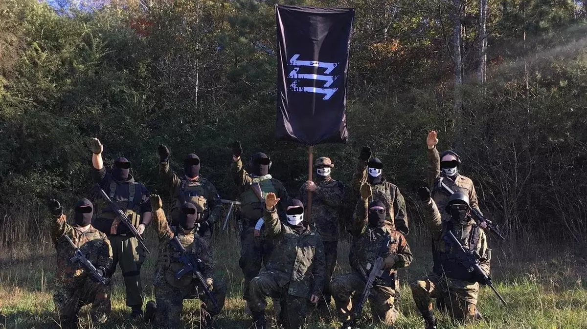
Qué es The Base la organización terrorista neonazi que planea atentados en EEUU, España y Ucrania
Liderado por un estadounidense con entrenamiento militar y que vive en San Petersburgo
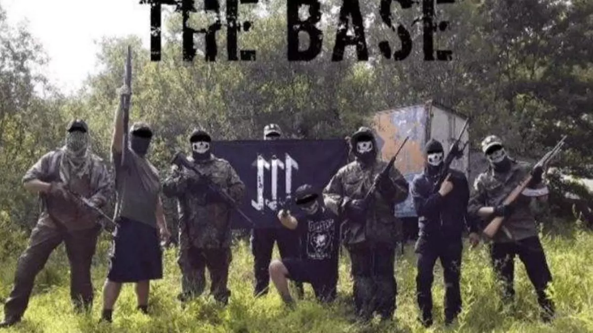
Descarrilar unos putos trenes, matar a gente y envenenar el agua
Aceleracionismo, separatismo blanco y fascinación por Al Qaeda: así son los nuevos grupos terroristas de extrema derecha “¿Cuántos ataques de lobos solitarios por semana y durante cuánto tiempo serían suficientes para obligar al sistema a adaptarse a las demandas legislativas problancas?”, pregunta un miembro de The Base

Atomwaffen Division (AWD): el grupo neonazi que pretendía instalarse y ‘pasar a la acción’ en España
célula en España de un grupo neonazi aceleracionista surgió en los EEUU en 2015, a través de un foro de internet su Atomwaffen Division España
Bajo el pseudónimo B.M. COMANDO Never Surrender se esconde el individuo que llegó a fantasear en el grupo de Telegram de la delegación europea del colectivo aceleracionista AWDE con asesinar a cuchilladas a personas por la calle. premacista llamado Iron March
AWD igual que The Base y otros grupos similares, promueven la creación de células autónomas o “lobos solitarios” que operen por su cuenta, contra las infraestructuras del Estado y contra personas a las que consideran enemigas.
En Telegram eran Spanish Waffen
La mayor parte de los integrantes habían participado en los últimos años en varias movilizaciones anti-independentistas y contra la gestión de la pandemia por parte del gobierno de Pedro Sánchez en Catalunya. Una participación codo con codo con otras organizaciones neonazis y de extrema derecha como Tercios Urbanos parte del cual se integró en Núcleo Nacional o el Frente Nacional Identitario - Partido Nacional Socialista Obrero Español (FNI-PNSOE)
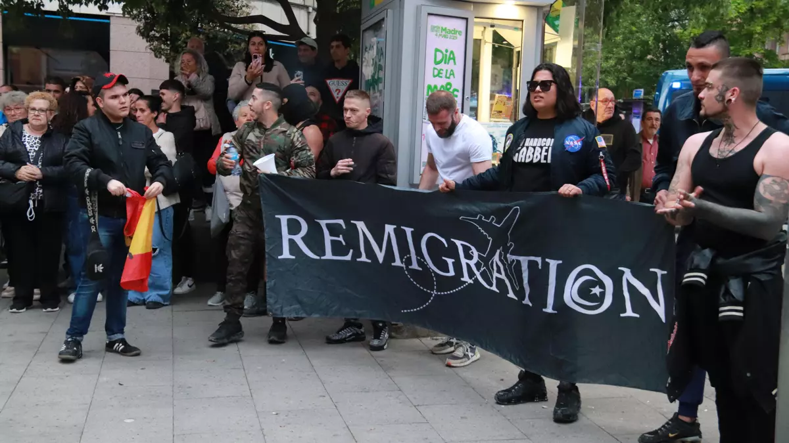
El líder detenido del grupo neonazi Deport Them Now trabajaba como vigilante de seguridad y fue interino de la Generalitat
5 conexiones de Putin con la extrema derecha Aldescubierto.org
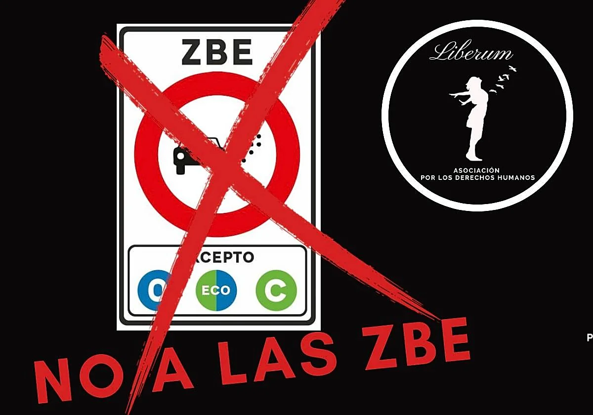
Quién es Liberum La asociación «contra el estado abusador» que recurre todas las ZBE, incluida la de Donostia
Liberum la organización ultraderechista que pone a Begoña Gómez en el punto de mira
El desconocido entramado que usaron los fascistas para refugiarse en Madrid
Las mafias de los porteros de discoteca: de la Primera Línea de Falange a los temidos Iraníes
Políticos de AfD se reunieron con neonazis en Suiza –DW (29/12/2024)
Un asistente al congreso de refundación de las juventudes del partido de ultraderecha alemán AfD con unas zapatillas Nike customizadas con el logo del partido.
Cómo la extrema derecha se está infiltrando en la cultura del día a día: "Es aterrador"
Los partidos alemanes AfD y BSW y su relación con Rusia – DW (29/12/2024)
Laura Méndez | actividad de la extrema derecha (grupúsculos, partidos, outsiders)
El franquismo censuró 'Orlando' de Virginia Woolf 80 años antes que el PP y Vox La homosexualidad, la sexualidad femenina y la artificialidad de los papeles asignados por el género fueron demasiado para la inquisición franquista Orlando nunca dejó de ser la misma persona después de convertirse en mujer.
Woolf dedicó este libro a su amante la aristócrata poeta Vita Sackville-West, que vestía como hombre.
Crítica al patriarcado que realizó Woolf.
La normalización del fascismo
Conocer los primeros pasos políticos de Hitler nos ayuda a lidiar con los ultras de hoy
Vox: tened miedo, mucho miedo
Vox: asi nacio (financiación)
Los 11 de Vox en Madrid: militantes antiderechos, nobles, ultracatólicos y miembros de la secta El Yunque
Bandera de Gadsden
"Nos toca defender España": la derecha radical se lanza a abrir escuelas para adoctrinar
Fundación Disenso presidida por Abascal
Fundación Ingenio lobby agrario cercano a Vox
SOS Rural, de la Fundación Ingenio lobby agrario cercano a Vox y financiada por los regantes del Campo de Cartagena y conocida por desinformar sobre el Mar Menor
Las placas solares “esterilizan el campo” y provocan incendios: bulos anti renovables de un lobby agrario cercano a Vox
“Donde se planta una placa no vuelve a crecer nada en décadas”, dice SOS Rural, de la Fundación Ingenio financiada por los regantes del Campo de Cartagena y conocida por desinformar sobre el Mar Menor
'Caso Topillo', pseudociencia y Vox: qué hay tras la Fundación Ingenio el mayor lobby agrario de la Región de Murcia
Caso Topillo', pseudociencia y Vox: qué hay tras la Fundación Ingenio el mayor lobby agrario de la Región de Murcia
La editorial de cabecera de Abascal Homo Legenspublica una autobiografía de Giorgia Meloni prologada por el líder de Vox
Las placas solares “esterilizan el campo” y provocan incendios: bulos anti renovables de un lobby agrario cercano a Vox
“Donde se planta una placa no vuelve a crecer nada en décadas”, dice SOS Rural, de la Fundación Ingenio financiada por los regantes del Campo de Cartagena y conocida por desinformar sobre el Mar Menor
Madrid recuerda el 11 de noviembre, a Carlos Palomino 16 años después de su asesinato y con los ultras de nuevo en las calles
Ramón Tamames, de fundador de Izquierda Unida a candidato de Vox
Movimiento Social Republicano (MSR) partido político de extrema derecha de España fundado en 1999 y disuelto en 2018, neonazi o neofascista.
Vox Golpistas (un vago, una que redacta proyectos de arquitectura sin serlo, uno en busca y captura en Gibraltar, uno que no pagaba las obras de su casa...)¡Vaya caterva!
Lebensraum políticas y prácticas de colonización expansionistas Alemania I y II WW
Conspiración Coudenhove-Kalergi | Plan Kalergi
En qué consiste la teoría de la conspiración sobre el Plan Kalergi
Gerd Honsik "Adiós Europa" uno de los principales ideólogos del neonazismo
Hungría en la Puerta del Sol Antonio Maestre
Institut des Sciences Sociales, Économiques et Politiques | ISSEP fundado por Lepen
Instituto de Política Social (IPS) | Familia y Dignidad Humana (Lourdes Méndez-Monasterio), One of Us (Mayor Oreja, Méndez-Monasterio) Valores y Sociedad (Mayor Oreja), Fundación Villacisneros (Tertsch) Hazte Oír, Profesionales por la Ética y la Asociación Católica de Propagandistas
Heraldos del Evangelio la secta vinculada a Abogados Cristianos acusada de alienación parental, acoso sexual y violaciones a menores
Los Heraldos del Evangelio y Ordo Iuris la plataforma judicial que preside en España Juan José Liarte, uno de los patronos de Abogados Cristianos y a la que también pertenece Polonia Castellanos son pantallas de Tradición Familia y Propiedad la organización de origen brasileño fundada por el político cristofascista Plinio Correa de Oliveira (Dominus Plinius). Los Heraldos del Evangelio o Caballeros de la Virgen son una derivada de la organización de origen brasileño Tradición Familia y Propiedad creada en 1960 por el político Plinio Correa de Oliveira, a imagen y semejanza de otras organizaciones anticomunistas como El Yunque surgidas en Latinoamérica para frenar el avance de lo que ellos consideraban una conjura "judeo masónica comunista" de nivel mundial, cuyo único fin era acabar con la Iglesia Católica Apostólica y Romana, la cual, siempre siguiendo la línea discursiva de “Dominus Plinius”, habría sido infiltrada, a más alto nivel, por el mismo demonio.
Las cuentas de Abogados Cristianos errores, retrasos y donaciones al alza para perseguir "ofensas a la religión"
764 (organización) 764 es una red terrorista satánica neonazi descentralizada, supuestamente adyacente a la Orden de los Nueve Ángulos una red terrorista satánica de extrema derecha.
fue fundada en 2021 por Bradley Cadenhead, un adolescente de Stephenville, Texas ; el nombre del grupo deriva del código postal de la ciudad
Orden de los Nueve Ángulos | ONA u O9A es un culto satánico fundado en Reino Unido, junto con varios grupos afiliados de otras partes del mundo en la década de 1960, pero mejor conocido hasta la década de 1980. Atrajo la atención de muchos por sus ideologías
Ley de Memoria Histórica
Conoce los símbolos de la extrema derecha La bandera del Águila de san Juan, que no es la oficial del Estado en la actualidad y que está asociada a la dictadura, no es ilegal. Con una excepción: los lugares y actos dependientes de administraciones públicas, tal y como recoge la ley de Memoria Histórica impulsada por el Gobierno socialista de José Luis Rodríguez Zapatero en 2007.
Ley 52/2007, de 26 de diciembre por la que se reconocen y amplían derechos y se establecen medidas en favor de quienes padecieron persecución o violencia durante la guerra civil y la dictadura. (Ley de Memoria Histórica)
Artículo 15. Símbolos y monumentos públicos. 1. Las Administraciones públicas, en el ejercicio de sus competencias, tomarán las medidas oportunas para la retirada de escudos, insignias, placas y otros objetos o menciones conmemorativas de exaltación, personal o colectiva, de la sublevación militar, de la Guerra Civil y de la represión de la Dictadura. Entre estas medidas podrá incluirse la retirada de subvenciones o ayudas públicas.
¿Es ilegal exhibir la bandera franquista?
Las fotos de la vergüenza: una treintena de franquistas vuelven a desafiar la Ley de Memoria con un mitin en Huesca
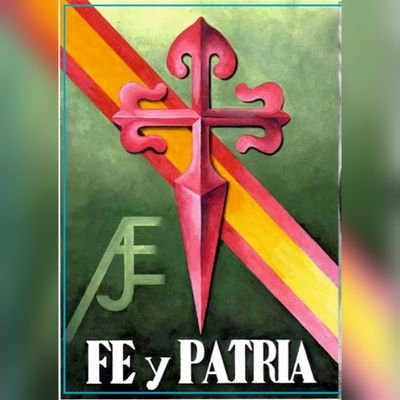
Movimiento Católico Español (MCE) y de Acción Juvenil Española (AJE)
Tradicionalismo | Carlismo
La división del carlismo que culminó en Montejurra 1976: del “Dios, Patria, Rey” al “Socialismo, Federalismo, Autogestión”
Ruiz de Gordoa fue el 'cabeza de turco' de la Operación Montejurra mientras la amnistía salvaba a Fraga y Arias Navarro
Fraga organizó la movilización de 5.500 ultraderechistas que acabó con dos asesinados en Montejurra
La Cruz de Borgoña El carlismo se la apropió y el franquismo la manipuló
La Cruz de Borgoña primera Bandera de España «Comunión Tradicionalista| carlismo
Requetes, Carlismo -Guerra Civil
Carlismo
Cruz de Borgoña - pelayosymargaritas.es carlista
Marcha de Oriamendi himno del carlismo -es.wikipedia.org
Marcha de Oriamendi himno del carlismo -youtube
la versión original de la Marcha de oriamendi, la que están cantando, fue escrita en euskara, y decía muy claramente:
Maite degu Euskal herria,
maite bere fuero zaharrak,
asmo hortara jarriz daude
beti karlista indarrak.
(Amamos Euskal herria, amamos sus antiguos fueros; a su conservación se dirigen todas las fuerzas carlistas)
El carlismo se dividió en dos facciones irreconciliables y antagónicas: los carlistas y los tradicionalistas. Unos se definen socialistas autogestionarios y defienden el derecho de autodeterminación de los pueblos de España, otros son integristas católicos reaccionarios. Partido Carlista (1971)
Comunión Tradicionalista Carlista (1986)
De CTC fueron expulsados otros reaccionarios, que son los seguidores de Sixto de Borbon, que formaron la Comunión Tradicionalista. Comunión Tradicionalista (2001)
¡Alto! ¿quien vive? - Canción de las Guerras Carlistas
En la guerra civil llevaban unos escapularios donde se podía leer "Detente, bala, el Sagrado Corazón de Jesús me protegerá."
Partido Carlista (1971) De "carlistas", no. De requetés. Estos abandonaron hace mucho la causa carlista, cuando el "rey legítimo" les salió izquierdoso, y abandonaron la legitimidad para apoyar al hermano usurpador, que era integrista tradicionalista, como ellos querían. El carlismo oficial hoy en día se define "socialista autogestionario". Comunión Tradicionalista, vinculado a Carlos Hugo de Borbón-Parma | En la romería de Montejurra Por aquel entonces, el carlismo javierista, que defendía la acción del Requeté en la guerra civil pero se sentía marginado por el régimen franquista desde el decreto de Unificación
Agrupación de Juventudes Tradicionalistas | Carlistas
Carlismo
¡Viva Cristo Rey!
Los Guerrilleros de Cristo Rey asaltan la Universidad de Madrid
Tenemos un Gobierno que no sigue las inspiraciones nacionales, sino otras extranjeras ordenadas por el marxismo y la masonería.. Por lo tanto, creo que la violencia va a ser cada vez más necesaria», dijo, el 22 de febrero de 1977, en Madrid, Mariano Sánchez Covisa, jefe de los Guerrilleros de Cristo Rey, y el 10 de junio de 1978, añadió: «Si mañana se levanta un general y echa de todos los sillones a los que están usurpándolos ahora, no es un golpe de Estado. Ha cumplido con su deber». a finales de enero de 1979, un grupo de guerrilleros, al grito de «A por ellos» y «Viva Cristo Rey», asaltó la Facultad de Derecho de la Universidad de Madrid. Iban armados y sus disparos hirieron a un bedel y a varios estudiantes. Tras una persecución en coche, la policía pudo detener a cuatro de los más de treinta guerrilleros
Instituto de Política Social (IPS) | Familia y Dignidad Humana (Lourdes Méndez-Monasterio), One of Us (Mayor Oreja, Méndez-Monasterio) Valores y Sociedad (Mayor Oreja), Fundación Villacisneros (Tertsch) Hazte Oír, Profesionales por la Ética y la Asociación Católica de Propagandistas
Heraldos del Evangelio la secta vinculada a Abogados Cristianos acusada de alienación parental, acoso sexual y violaciones a menores
Los Heraldos del Evangelio y Ordo Iuris la plataforma judicial que preside en España Juan José Liarte, uno de los patronos de Abogados Cristianos y a la que también pertenece Polonia Castellanos son pantallas de Tradición Familia y Propiedad la organización de origen brasileño fundada por el político cristofascista Plinio Correa de Oliveira (Dominus Plinius). Los Heraldos del Evangelio o Caballeros de la Virgen son una derivada de la organización de origen brasileño Tradición Familia y Propiedad creada en 1960 por el político Plinio Correa de Oliveira, a imagen y semejanza de otras organizaciones anticomunistas como El Yunque surgidas en Latinoamérica para frenar el avance de lo que ellos consideraban una conjura "judeo masónica comunista" de nivel mundial, cuyo único fin era acabar con la Iglesia Católica Apostólica y Romana, la cual, siempre siguiendo la línea discursiva de “Dominus Plinius”, habría sido infiltrada, a más alto nivel, por el mismo demonio.
Las cuentas de Abogados Cristianos errores, retrasos y donaciones al alza para perseguir "ofensas a la religión"
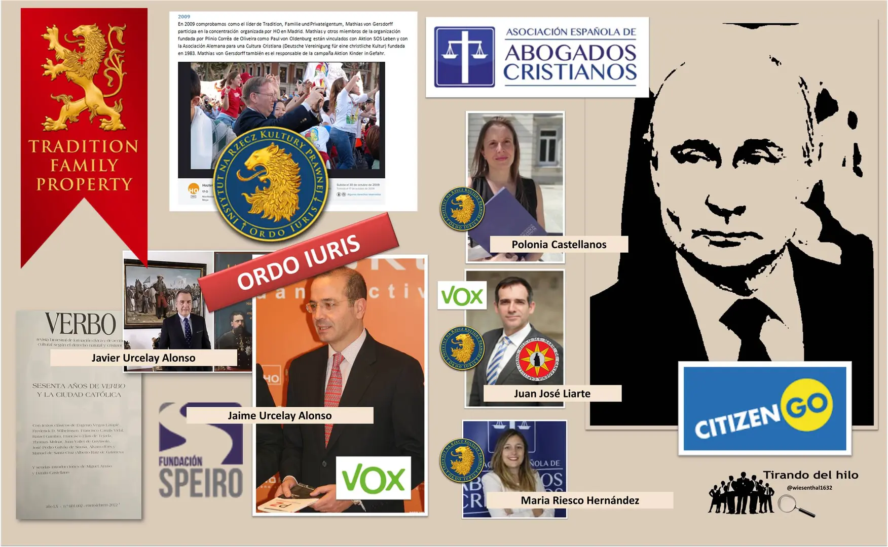
El lobby fundamentalista cercano al Kremlin, CitizenGo detrás de la financiación de Abogados CristianosAbogados Cristianos, Jaime Urcelay Alonso-El Yunque
La Asociación Española de Abogados Cristianos creada en 2008 y presidida por Polonia Castellanos es una de las organizaciones estrechamente vinculadas a Hazte Oír plataforma española de la secta cristofascista, paramilitar y secreta, de origen mejicano conocida como El Yunque (1953) que desembarcó en nuestro país de la mano del empresario Ruiz Mateos en la década de los 70, cuando sus aliados, los Cruzados de Cristo Rey construyeron la casa de formación sacerdotal Nuestra Señora de la Oliva, en Toledo, con fondos proporcionados por Rumasa
Cara al Sol | Himno falangista
Del “Detente, bala” al “Detente, Covid”
Carlistas de ultraderecha adoctrinan a menores en un campamento de verano
La ultraderecha carlista celebra un cónclave en un convento de monjas de Granada
Boinas rojas, rosario e izado de bandera: los carlistas organizan un campamento para "formar" a niños desde los ocho años
España, país donde "el extremismo de derechas puede estructurarse para el terrorismo", según un informe de la OIET
Atentados Ultraderecha en España.:
Matanza de Atocha
Batallón Vasco Español (BVE)
Alianza Apostólica Anticomunista (AAA) Grupos Armados Españoles (GAE)
Guerrilleros de Cristo Rey
Atentado contra el Bar Aldana
Trump.:
No es trumpismo, es fascismo
David Mamet, el prestigioso guionista cinematográfico, y la politóloga Barbara F. Walter, autora del ensayo Cómo empieza una guerra civil (2022) han destacado que el discurso de Trump está preparando el terreno para una confrontación civil. El multimillonario hace lo posible para crear dos bandos: por un lado, negros, latinos, musulmanes, feministas, liberales, intelectuales, científicos, personas con “malos genes” y ciudadanos de las grandes urbes; por otro, blancos, cristianos, personas sanas, hombres nostálgicos del patriarcado, mujeres que desean volver a ser amas de casa (tradwife), amantes de las armas y habitantes del mundo rural. La América tradicional, el país del rifle y la Biblia, se siente amenazada.
El antiestalinismo de los trostkistas y por su solidaridad internacionalista, una de las obras de Trotsky: “Su moral y la nuestra”
en la que, denunciando muy justamente el “fariseísmo burgués”, acaba “situando” la única moral reivindicable en los cuerpos de la clase obrera.
No, no hay “su” moral y la “nuestra”. Si es “su” moral, no es moral; si es la “nuestra”, es igualmente inmoral.
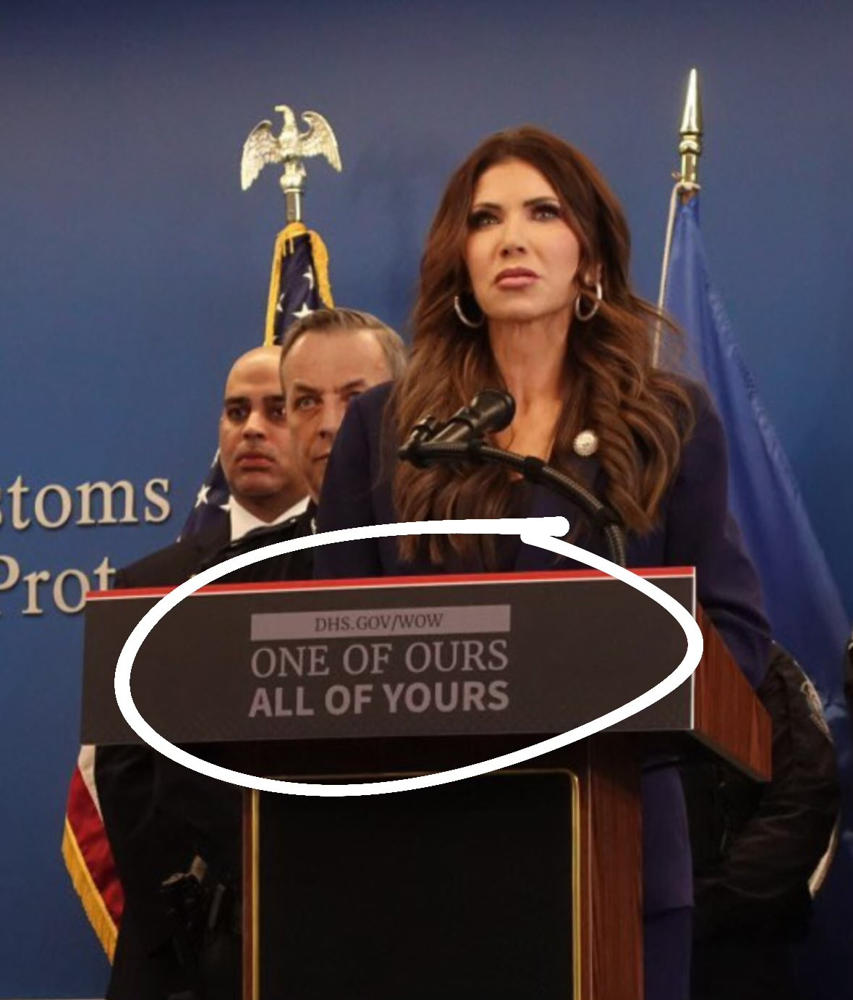
ONE OF OURS, ALL OF YOURS "Uno de los nuestros, todos los vuestros".
La Secretaria de Seguridad EEUU, Kristi Noem, habla en un podio con un eslogan nazi grabado ONE OF OURS, ALL OF YOURS ("Einer von uns, alle von euch") que se traduce como "uno de nosotros, todo de vosotros" . Su origen está en el asesinato del líder nazi más cruel en Praga, Reinhard Heydrich, jefe de las temidas SS, la Gestapo y artífice de la “Solución Final” respondido con la masacre de toda la población de Lidice (República checa) El pueblo de donde procedían quienes atentaron fue masacrado, los nazis mataron a toda la población .... Defiende ICE Hay una película sobre los hechos El hombre del corazón de hierro
No existe ninguna duda de que la ICE, son las SS de Trump y Kristi Noem su comandante en jefe. Esta es la psicópata HP que mató a su perro de un tiro y lo grabó, porque no le había obedecido. Entre el eslogan, el águila y la bandera ya no sabe uno si está viendo una película de romanos, una de nasis o una distopia bélica. La conocen cómo la Poppy Killer (mataperros)
Las fuerzas alemanas destruyen el pueblo checo de Lidice.
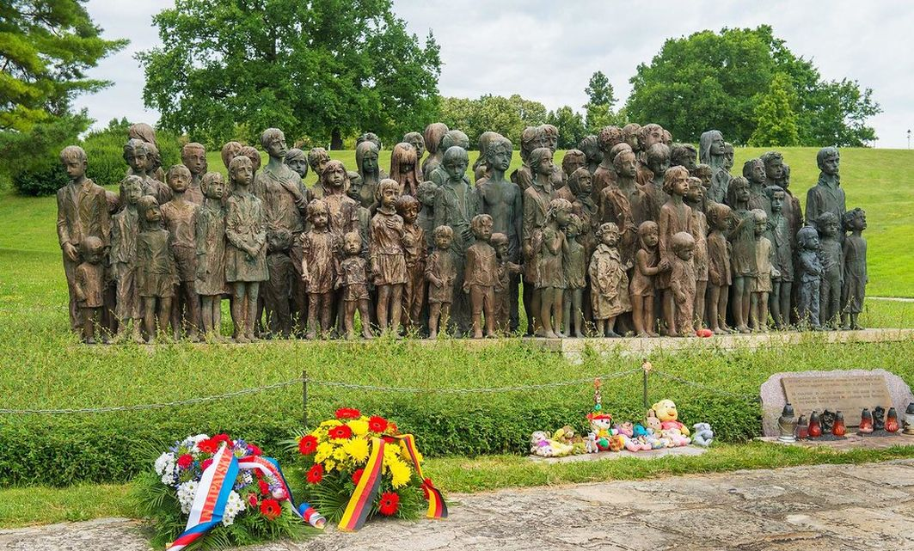
Lídice Recuerdan dos brutales masacres cometidas en la Segunda Guerra Mundial
Lídice y Ležáky: los monumentos de dos pueblos que fueron borrados del mapa El 4 de junio de 1942, miembros de la resistencia checoslovaca asesinaron en Praga a un importante dirigente nazi: Reinhard Heydrich.
Guerra civil en el trumpismo por el acercamiento al líder supremacista Nick Fuentes
Tucker Carlson, ex presentador de la FOX que hizo campaña con Trump para las presidenciales de 2024 y referente del mundo MAGA, amparó las narrativas antisemitas con Fuentes en una entrevista defendida por el director de la Heritage Foundation lobby ultra que diseñó el Proyecto 2025 una de las bases ideológicas de la agenda de Trump
Club de los Viernes el laboratorio de ideas de la extrema derecha española
Club de los Viernes think tank cercano a las tácticas de la alt right trumpista de EEUU
Los escándalos salpican a la extrema derecha portuguesa: robo de maletas, prostitución de menores y más
Los líderes de Patriots arrancan su cumbre llamando a “hacer Europa grande otra vez”
Abascal el primer ministro de Hungría, Viktor Orbán la francesa Marine Le Pen y el italiano Matteo Salvini
se suman las del holandés Geert Wilders el portugués André Ventura el polaco Krzysztof Bosak el checo Petr Macinka la griega Afroditi Latinopoulou y el estonio Martín Helme
Make Europe Great Again (MEGA) | Haz a Europa grande otra vez
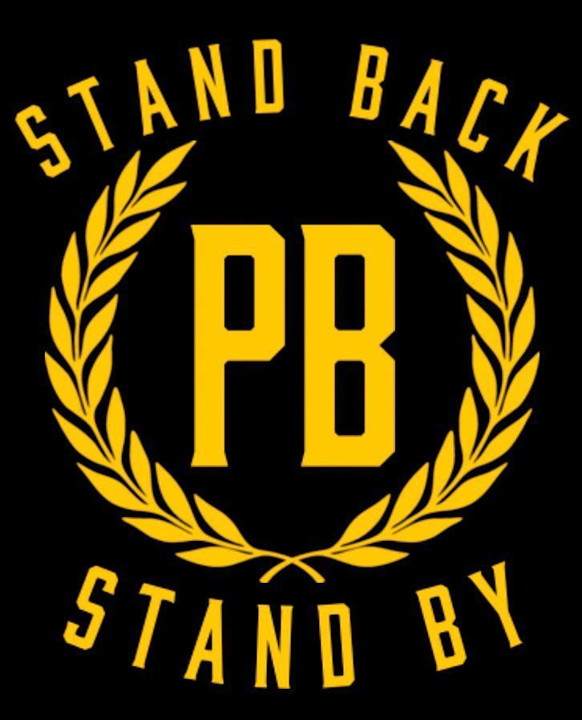
Proud Boys ultranacionalista, neofascista,? de extrema derecha,? solo para hombres, vinculada con el supremacismo blanco que promueve y se involucra en la violencia política. Tiene su sede en los Estados Unidos y también cuenta con presencia en Canadá, donde está calificada como grupo terrorista.Está dirigida por Enrique Tarrio su presidente desde 2019, quien también es el líder de la asociación Latinos for Trump
QAnon teoría de la conspiración Trump lucha contra la pedofilia y el "Estado profundo"
QAnon (abreviación de Q-Anónimo) teoría conspiración extrema derecha EE.UU.
QAnon teoría de la conspiración Trump lucha contra la pedofilia y el "Estado profundo"
QAnon (abreviación de Q-Anónimo) teoría conspiración extrema derecha EE.UU.
Technocracy inc, Musk, Curtis Yarvin, la Thiel network, Batallón Azov, Carpathian Sich, Freikorps, Freedom of Russia Legion, el Russian Volunteer Corps (RDK), German Volunteer Corps, Rusich, la Brigada “La Española”, Interbrigades, Russian Imperial Movement, E.N.O.T. Corp, Atomwaffen Division (AWD), The Base, Terrorgram Collective, groypers, White Racially Motivated Extremists (WMRE), Order of Nine Angles, 764, Maniac Murder Cult, Nihilistic Violent Extremism NVE, The Com, RapeWaffen, No Lives Matter (NLM), Maniac Murder Cult, Rise Above Movement (R.A.M.), Active Club Network, Democracia Nacional, Hacer Nación, Facta, Núcleo nacional
Terroristas Neonazis Hace tan solo unos días, dos adolescentes norteamericanos se presentaron en una mezquita de San Diego, California armados hasta los dientes. Su ropa y sus armas estaban decoradas con varios símbolos neonazis. Unas horas antes habían publicado en sus redes un manifiesto en el que explicaban lo que iban a hacer y porqué. El título del texto, La nueva cruzada: hijos de Tarrant es una clara referencia a otro hecho similar, el ataque de Christchurch, Nueva Zelanda, en 2019 contra una mezquita que dejó 52 muertos, y un reconocimiento a su autor, el neonazi Brenton Tarrant
Los dos jóvenes, igual que Tarrant, retransmitieron en directo su acción, hasta que ambos terminaron con su vida de un disparo. También ante las cámaras.
Make America Great Again | Haz a los Estados Unidos grande otra vez» o «Que Estados Unidos vuelva a ser grande»)
abreviado como MAGA es un eslogan utilizado en la política estadounidense popularizado por Donald Trump en su campaña presidencial de 2016
Make Europe Great Again (MEGA) | Haz a Europa grande otra vez
Qué son las DEI las siglas que obsesionan a Trump en su cruzada conservadora en EEUU
Las órdenes también daban instrucciones a las agencias del gobierno para que inicien programas que disuadan al sector privado de tomar medidas de Diversidad, Equidad e Inclusión (DEI) lo que algunas personas interpretaron como un intento de impedir que las empresas tomasen acciones para evitar la discriminación en el lugar de trabajo.
La jueza progresista del Tribunal Supremo Sonia Sotomayor respondía este martes a las recientes declaraciones de la fiscal general, Pam Bondi quien prometió perseguir a cualquiera que utilice "discurso de odio" tras el asesinato de Kirk "Cada vez que escucho a un representante con formación en derecho decir que deberíamos criminalizar
la libertad de expresión de alguna manera, pienso: esa facultad de derecho fracasó", declaró Sotomayor durante una intervención en la Facultad de Derecho de Nueva York.
Pero en eso estamos. Hasta tal punto es así, que a una pregunta de Brian Glenn el novio de la congresista ultra MAGA Marjorie Taylor Greene
corresponsal en la Casa Blanca de Real America’s Voice, sobre el amparo de la Primera Enmienda –la que protege la libertad de expresión–, Trump mascullaba:
"No estoy tan seguro de eso".
DOGE (Departamento de Eficiencia Gubernamental) está hackeando Estados Unidos
Trump acorrala a los grandes bufetes de abogados en plena batalla contra el poder judicial
EE UU pide a los proveedores de todas sus embajadas que certifiquen que no cumplen con políticas de diversidad e igualdad
El contenido LGTBIQ+ desaparece de la web de Iberdrola en plena ola reaccionaria de Trump
Amazon retira Los diarios de Turner la 'Biblia' de la ultraderecha de EEUU
Jo Ellis la piloto militar trans falsamente acusada de provocar el accidente aéreo en Washington tras los bulos de Trump
El jefe del Pentágono envió los planes para bombardear objetivos hutíes en otro chat de Signal con su mujer y su hermano
La gallega que se parece a Trump: «Eu digo que será pola cor do pelo»
The Intolerance Network (La Red de Intolerancia) Grandes fortunas financiaron nacimiento Vox
Filippo Tommaso Marinetti fundador del movimiento futurista, la primera vanguardia italiana del novecento y que sirvió como base para el fascismo de Mussolini
El manifiesto futurista de Filippo Tommaso Marinetti publicado en 1909 en Le Figaro y que se considera precursor del fascismo que conquistó el poder en Italia de la mano de Benito Mussolini en 1922
Aquel manifiesto que sembró las bases del fascismo presentaba una serie de puntos 11 en total que encajan muy bien con la Administración Trump y con los valores que preconiza cada día Hegseth
"No hay belleza sino en la lucha", decía el manifiesto: "Ninguna obra de arte sin carácter agresivo puede ser considerada una obra maestra; queremos glorificar la guerra —única higiene del mundo—, el militarismo, el patriotismo, el gesto destructor de los anarquistas, las ideas por las cuales se muere y el desprecio por la mujer; queremos destruir y quemar los museos, las bibliotecas, las academias variadas y combatir el moralismo, el feminismo y todas las demás cobardías oportunistas y utilitarias".
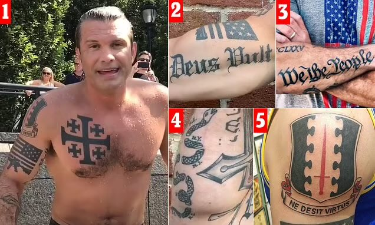
Los tatuajes del nuevo Secretario de Defensa estadounidense Pete Hegseth
Deus vult (en latín: ‘Dios lo quiere’) o, en latín vulgar, Deus lo vult Dios lo quiere que era el grito de los cruzados cruz de Jerusalén
We the people tal como está escrito en el encabezado (Preámbulo) de la Constitución de EE.UU.
MDCCLXXV / 1775 en números romanos ¿Será por el inicio de la guerra de Independencia de los Estados
Yehweh -- Jesús en hebreo.
La serpiente de JOIN, or DIED / Únete o muere Caricatura política de Benjamin Franklin de la década de 1760.
Ne Desit Virtus El escudo que aparece tatuado de su paso por Irak, es un lema en latín que significa Que el valor no falle , adoptado por el 187.º Regimiento de Infantería de EE. UU. (conocidos como los "Rakkasans"), parte de la 101.ª División Aerotransportada
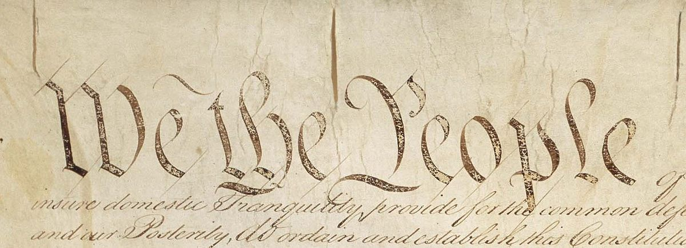
We the people tal como está escrito en el encabezado (Preámbulo) de la Constitución de EE.UU.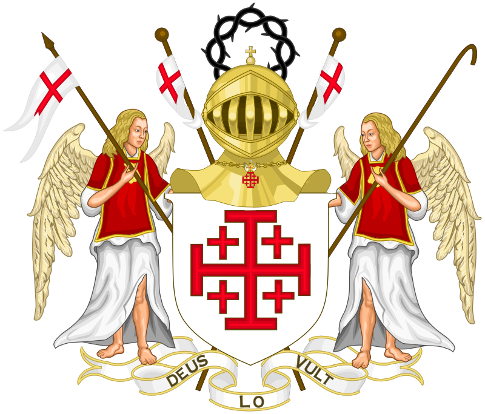
Deus Vult | Dios lo quiere que era el grito de los cruzados
cruz de Jerusalén
La cruzada de un pastor por la dominación cristiana en la era de Trump
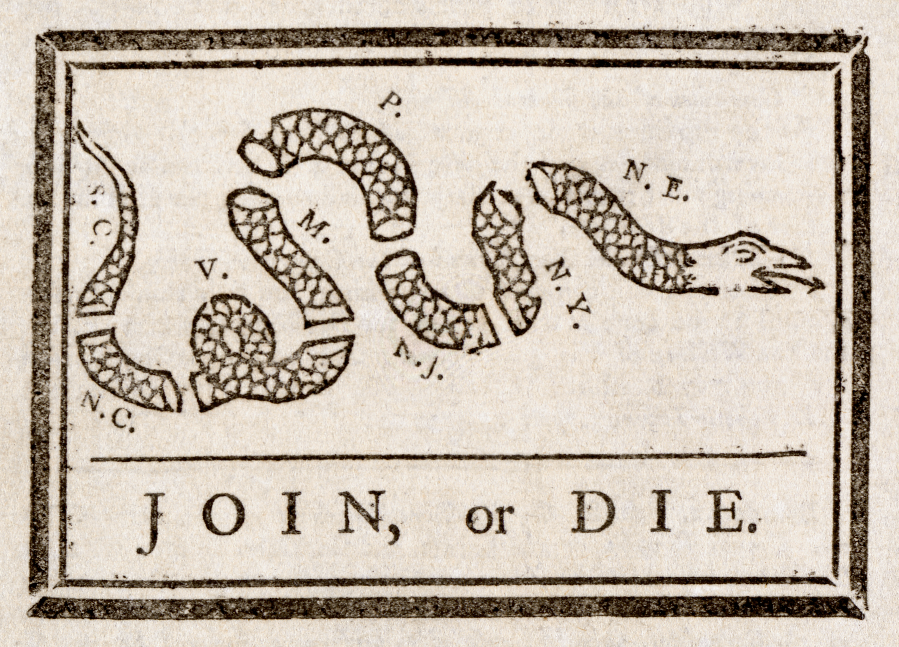
caricatura política de Benjamin Franklin (1754)
Es la serpiente Join or Die (Únanse o mueran)
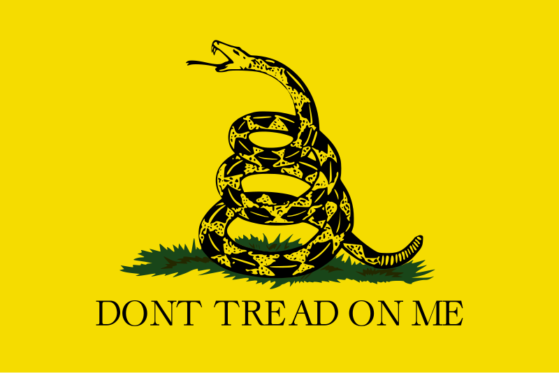
Bandera de Gadsden
Dont tread on me que puede traducirse al español como 'No pases sobre mí', 'No me pisotees' o 'No me pises'.
La bandera lleva el nombre del general Christopher Gadsden (1724-1805) que la diseñó en 1775 durante la revolución de las Trece Colonias Fue utilizada por los Marines Continentales como una de las primeras banderas de lema, junto con la bandera de Moultrie.
La bandera de Gadsden es conocida en la cultura popular estadounidense y también es reconocida en otros países. Como símbolo, representa el constitucionalismo, el liberalismo clásico y el libertarismo.

Bandera de Gadsden Uso como símbolo nacionalista de extrema derecha
La bandera de Gadsden junto a la bandera de la Alemania nazi y la bandera de batalla de los Estados Confederados de América en una manifestación en Charlottesville.
Deus Vult | Dios lo quiere que era el grito de los cruzados
cruz de Jerusalén
Israel, el cristianismo y mi fe son cosas que me importan mucho.
I got Yehweh (Jesus in Hebrew) | Jesús en Hebreo Para los hebreos Jesús es un hereje, una oveja descarriada. :-D

RAC | Rock Against Communism (Rock Contra el Comunismo) es.wikipedia
RAC | Rock Against Communism (Rock Contra el Comunismo) en.wikipedia
White Power Rock Concerts (Conciertos de rock de poder blanco) en el Reino Unido a finales de los años 70 y principios de los 80
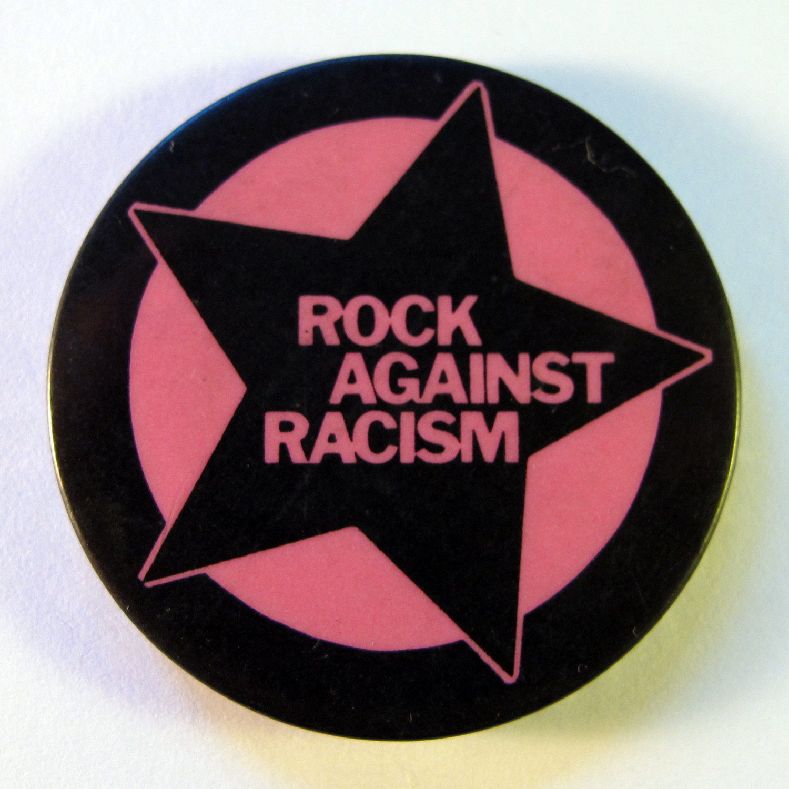
RAR | Rock Against Racism (Rock Contra el Racismo)
Movimiento político y cultural que surgió en 1976 como reacción al aumento de los ataques racistas en las calles del Reino Unido y al creciente apoyo al Frente Nacional de extrema derecha en las urnas
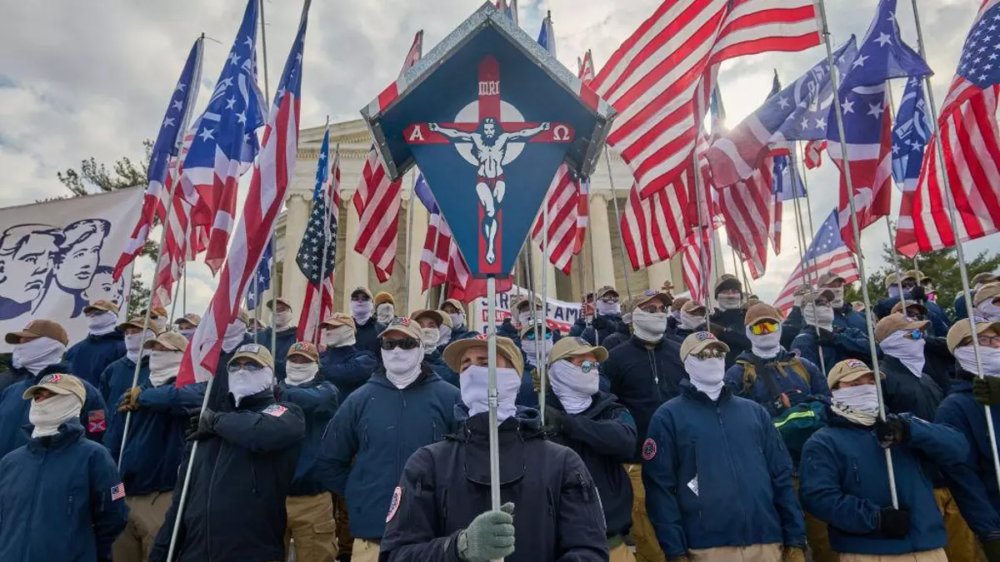
Old Glory Club la opaca red para hombres de extrema derecha que se extiende por EEUU durante la era Trump
Runas ibéricas | Fenicias
Las piedras rúnicas: introducción a lo que fueron y su significado – The Valkyrie's Vigil
Las piedras rúnicas: Simbología del Mundo
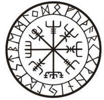
Simbología fascista RUNAS VIKINGAS: significado de sus símbolos mágicos
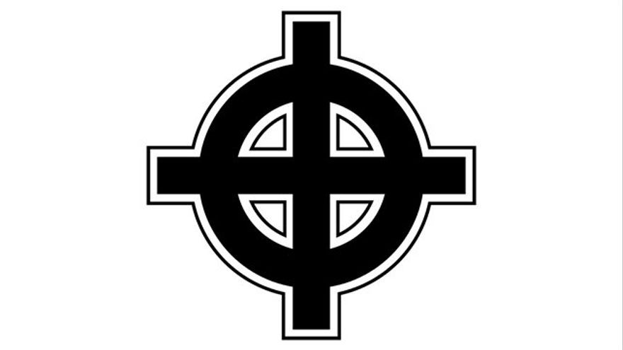
Cruz celta utilizada por los movimientos neonazis, entre otros símbolos y códigos en la iconografía neonazi, que exalta la creencia de superioridad de la raza blanca sobre las demás. Símbolos nazis
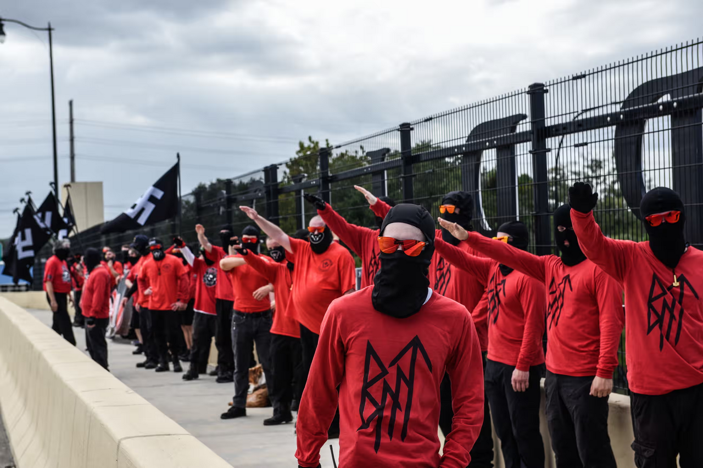
Blood Tribe grupo neonazi en Florida, Estados Unidos
Neonazismo
Simbología fascista Cruz Celta y la bandera de Alianza Nacional: los símbolos ultras
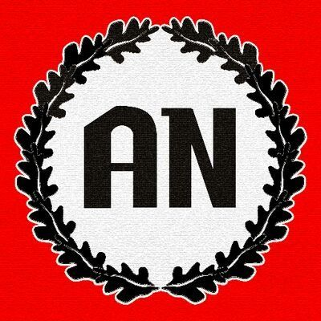
Simbología fascista bandera de Alianza Nacional
Simbología fascista España: barra libre para exhibir símbolos nazis
Simbología fascista símbolos de la extrema derecha
Simbolos franquistas -imagenes
Simbología del franquismo
Simbología del franquismo El escudo franquista no era el de los Reyes Católicos
Simbología del franquismo Manipulación fascista de los simbolos Españoles
Simbolos franquistas -imagenes
Escudo franquista del IES San Isidro
Escudo franquista del IES San Isidro “Una, grande y libre”: el ignorado escudo franquista del Instituto San Isidro que se resiste a desaparecer
Víctor Símbolo acuñado en el Imperio Romano derivado del crismón, usado por Franco
Medallas e insignias de la guerra civil, posguerra y franquismo
Simbología en el Deporte Prohibida PDF simbologiamotivodesancion.pdf
Simbología Ultraderecha en el Deporte Prohibida PDF
Banderas y símbolos del posfascismo, supremacismo blanco y Alt-Right
Giovinezza himno entre 1924 y 1943 del Partido Nacional Fascista italiano
SIMBOLOS DEL ODIO. ANÁLISIS SIMBOLOGÍA DEL ODIO PDF
Conoce los símbolos de la extrema derecha
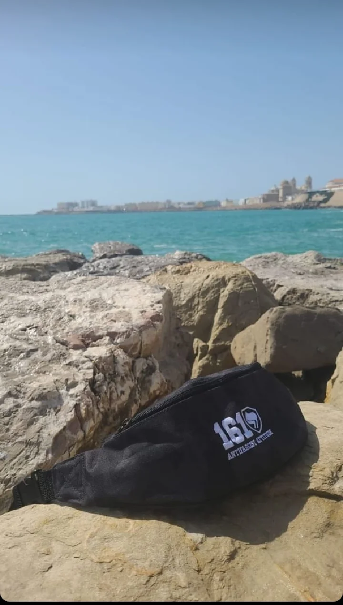
161 / AFA La A es la primera letra del abecedario y la F la sexta, formando AFA, que son las siglas en inglés de Anti Fascist Action (Acción Antifascista), coincidiendo en varios idiomas bajo las siglas de AFA. Dentro del ámbito fascista se versionan estas siglas cambiándolas a 1161, significando Anti-Acción Antifascista Símbolos skinhead, punk y antifascistas | Significado
Triángulo rojo invertido Simbolo antifascista utilizada por los presos políticos en campos de concentración nazis Comunistas, socialistas, anarquistas, así como sindicalistas y masones
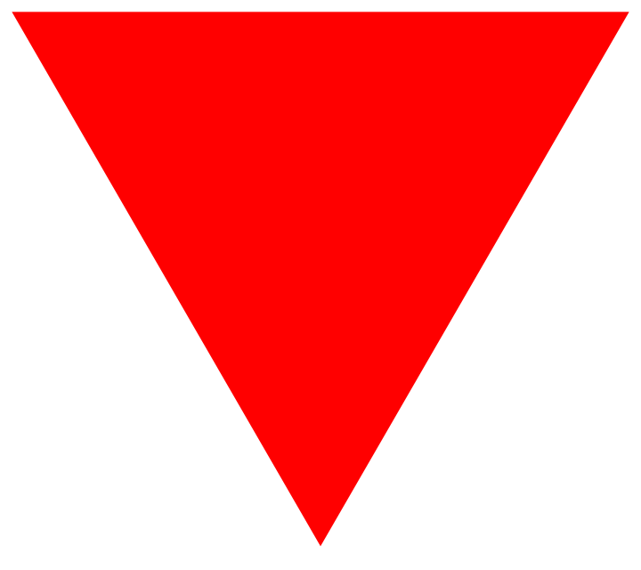
Triángulo negro invertido Simbolo reservado a discapacitados, vagabundos, gitanos, algunos anarquistas lesbianas y prostitutas
 1488.: Este número se puede encontrar en blancos racistas/presos nazis. Los números 14 ó 88 se pueden también utilizar solos.
El 14 representa catorce palabras que son una cita del líder nazi
David Lane.: We must secure the existence of our peopleand a future for white children
1488.: Este número se puede encontrar en blancos racistas/presos nazis. Los números 14 ó 88 se pueden también utilizar solos.
El 14 representa catorce palabras que son una cita del líder nazi
David Lane.: We must secure the existence of our peopleand a future for white children(“Debemos asegurar la existencia de nuestro pueblo y un futuro para los niños blancos”)
El 88 es la abreviatura de la octava letra del alfabeto dos veces HH, que significa Heil Hitler
Significados de Algunos Tatuajes de Delincuentes
Fred Perry Marca ropa con una corona laurel
HELLY HANSEN | HH
ropa de abrigo de la marca HELLY HANSEN | HH ¿Heil Hitler?
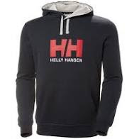
Helly Hansen camisetas que en su marca tiene las iniciales HH, que para los ultras significa Heil Hitler
Tatuaje corona laurel Cruz Celta La cruz celta la lucían los grupos cristianos confederados del KU KLUX KLAN y grupos supremacistas blancos
El laurel es un tatuaje recurrente en los grupos neonazis
Chaqueta Bomber de Black Metal
Chaqueta de Black Metal "inspirada en Crust"
Blasphemy es una banda canadiense pionera del bestial black metal formada en 1984, conocida por su temática satánica, violenta y caótica, Blasphemy se enfoca en temas blasfemos, no por una ideología nazi.
Aunque el género black metal a veces se cruza con el NSBM (Black Metal Nacional Socialista)
La combinación de Chaqueta Bomber (especialmente negra o verde oliva), botas de combate tipo Dr. Martens y cordones blancos en dichas botas es un símbolo clásico y reconocible asociado a los skinheads neonazis o de "white power" (poder blanco)
Significado y Detalles de la Vestimenta:
Cordones Blancos: Tradicionalmente, dentro del "código de cordones" de los skinheads, los cordones blancos simbolizan la supremacía blanca o el orgullo blanco. Botas de Combate: Botas negras, frecuentemente con punta de acero, utilizadas tanto por skinheads racistas como no racistas, pero la combinación con cordones blancos/rojos es el indicador de la facción racista.
Chaqueta Bomber: La cazadora bomber (tipo MA-1) es una prenda fundamental en la estética skinhead, popularizada desde los años 70.
Estilo "Straight-laced": Los skinheads supremacistas a menudo atan sus botas con un cordón recto horizontal (straight-lacing) en lugar del patrón cruzado, lo que refuerza el simbolismo nazi.
Contexto Histórico y Actual:
Esta estética se consolidó cuando una facción de la cultura skinhead working-class de los años 70 y 80 se inclinó hacia la extrema derecha y el racismo, diferenciándose de los skinheads tradicionales o antirracistas (SHARP).
Aunque el código de colores ha perdido vigencia en algunos lugares, sigue siendo un símbolo reconocido de odio.
Hitler escribió lo siguiente: “En el rojo vemos la idea social del movimiento, en el blanco la idea nacionalista; en la esvástica vemos la misión de la lucha por la victoria del hombre ario”
Simbología fascista
Runas de las SS
"Waffen-SS" (SS armadas) escuadrones de protección
cuerpo de combate de élite de las Schutzstaffel
Runa Eif | celo entusiasmo
SS fue utilizado por los ayudantes personales de Hitler, como Rudolf Hess
Runa Eif es.wikipedia
Sociedad Thule Variante de la Cruz solar en forma de esvástica
Grupo de Estudio de la Antigüedad Alemana (Studiengruppe für germanisches Altertum)
grupo ocultista, racista y völkisch, usado por la 5ª División SS Viking y el Movimiento de la Fe Alemana
Runa Tyr “Runa de Batalla” | cementerios
«Runa de Batalla», también conocida como «Tyr» o «Kampf»
era el emblema pagano del Dios de la Guerra Tyr
Runa Tyr es.wikipedia
Runa Leben “Runa de la Vida” se utilizaba para indicar nacimientos
"Lebensrune" se basó en la runa Algiz y fue utilizada por la Lebensborn
Runa Leben es.wikipedia
Runa Todesrune “Runa de la muerte” se utilizaba para indicar fallecimientos
Runa Toten es.wikipedia
Runa Hagal representación simbólica de "fe inquebrantable"
Se usó en bodas de las SS
Runa Hagal es.wikipedia
Runa Wolfsangel «Gancho de Lobo»
Runa Wolfsangel es.wikipedia
Runa Wolfsangel | SS-Panzer-Division El símbolo nazi prohibido en Alemania que llevaban los ultras en catalunya
Totenkopf (Cabeza de la Muerte)
calavera con tibias cruzadas las SS adoptaron primero para Agencia Totenkopfverbände
y luego para la 3ª División SS Panzer «Totenkopf» de las Waffen-SS
Responsable de administrar los Campos de concentración y los Campos de exterminio
Totenkopf | Combat_18 (Cabeza de la Muerte)
Logo derivado del Totenkopf usado por la tercera división Panzer de las Waffen-SS, usado comúnmente por simpatizantes a Combat 18
Combat 18 o (acortado como C-18 o 318)
Runa Odal | es el nombre de la runa que equivale a la letra «o»
simbólicamente unía el parentesco de familia con la sangre de raza
Runa Odal -es.wikipedia
Runa Heilszeichen Prosperidad, buena fortuna y el éxito
simbólicamente unía el parentesco de familia con la sangre de raza
Runa Heilszeichen -es.wikipedia
Simbolos-prohibidos-en-alemania.pdf
Simbología fascista Las insignias de los campos de concentración nazis
Simbología fascista Las insignias de los campos de concentración nazis -comunistas
Las insignias de los campos de concentración nazis -españoles
Sistema de marcado en los campos de concentración nazis
«Sonnenrad» o «Rueda Solar» Sol negro
constituía una antigua esvástica nórdica con forma de circunferencia que hacía referencia al Sol
 Ahnenerbe
Ahnenerbe "Sociedad para la Investigación y Enseñanza sobre la Herencia Ancestral Alemana"
Valknut -símbolo nórdico entre neonazis y supremacistas blancos
relámpago y círculo | Unión Británica de Fascistas
relámpago y círculo | Unión Británica de Fascistas
Símbolo, la mano con los tres dedos arriba corresponde a un antiguo gesto de la división SS Galitzia compuesta por Ucranianos
Anillo de honor de las SS
Hakenkreuz esvástica o cruz gamada
fue la insignia oficial del Partido Nacionalsocialista de los Trabajadores Alemanes (NSDAP)
y posteriormente la estatal del Tercer Reich, que también las SS lucirían en brazaletes rojos sobre sus uniformes negros
El enigma de la esvástica
Cómo el mundo amó la esvástica, hasta que los nazis se la apropiaron
El uso de la esvástica por el nacionalismo vasco (1): los inicios
.jpg)
El uso de la esvástica por el nacionalismo vasco (2): la década de los 30
El uso de la esvástica por el nacionalismo vasco (y 3): la prolongación de su uso
Mjölnir | Martillo de Thor arma de la mitología nórdica. Para el arma de Thor
Colgante Mjölnir de plata, muy popular entre neopaganos Ásatrú.
Mjölnir de Fossi, estilo islandés (cruz invertida, cabeza de bestia)
Colgante Mjölnir de estilo moderno
Insignias rúnicas de las Schutzstaffel
Aguila del NSDAP | Partido Nacionalsocialista Obrero Alemán
Balkenkreuz | Cruz de Hierro emblema de la Wehrmacht
"Tanques ucranianos con las cruces Balkenkreuz que llevaban los tanques de la Werhmacht de Adolf Hitler y con los simbolos Wolfsangel de las SS Das Reich en amarillo Europa, UK y EEUU, como en los años 30, financiando y armando a un ejercito nazi para que luche contra Rusia
Cruz de Hierro símbolo de las fuerzas armadas de Alemania (Bundeswehr) desde 1870 hasta la actualidad.
Sturmabteilung o «SA» «sección de asalto»
batallón tormenta o «destacamento de tormentas» milicia voluntaria NSDAP
organización voluntaria tipo milicia vinculada al Partido Nacionalsocialista Obrero Alemán, o partido nazi. A los miembros de las SA se les conocía como Camisas pardas o casacas pardas por el color de su camisa y uniforme, para distinguirlos de las SS que llevaban uniformes negros y camisa blanca (a veces también parda) a diferencia de los camisas negras italianos
Acción Nacional (National Action, NA) neonazis británicos

Acción Nacional (National Action | NA) neonazis británicos -bbc.com
Acción Nacional (National Action | NA) neonazis británicos -wikipedia.org
Acción Nacional (National Action | NA) neonazis británicos
Reino Unido prohíbe grupo de ultraderecha Acción Nacional (National Action | NA)
Asociación Anfifascista y Antirracista Hope Not Hate de Matthew Collins
Bandera japonesa del Sol Naciente
Bandera del Sol Naciente Ejército Imperial Japonés
"Tanques ucranianos con las cruces Balkenkreuz que llevaban los tanques de la Werhmacht de Adolf Hitler y con los simbolos Wolfsangel de las SS Das Reich en amarillo Europa, UK y EEUU, como en los años 30, financiando y armando a un ejercito nazi para que luche contra Rusia
Zelenskiy visitó Roma vistiendo un suéter con el letrero de la OUN, Organización de Nacionalistas Ucranianos, responsable de miles de muertes de civiles durante la Segunda Guerra Mundial, colaboradores nazis y del Holocausto.
Organización de Nacionalistas Ucranianos
Emblema Organización de Nacionalistas Ucranianos adoptado en 1932
Lider.: Stepan Bandera
Este signo es el "tridente" oficial ucraniano, pero tiene una espada o un filo en el centro y fue utilizado por los nazis ucranianos durante la Segunda Guerra Mundial
Iván el Terrible de Sobibor, Treblinka, Flossenberg, etc. era un nazi ucraniano y dirigía esas cámaras de gas. Él fue brutal. Le gustaba apuñalar a la gente y golpearla con tubos de metal.
Emblema Organización de Nacionalistas Ucranianos adoptado en 1941
Escudo de armas | Símbolo de los nacionalistas
¿Cuál ves en el suéter de Zelensky?
Este símbolo es el "tryzub" (tridente) 1918 que es el escudo de armas de Ucrania y data de hace unos 1.000 años.
Emblema de los nazis de Azov y de la 2ª Panzer Division Das Reich, una de las más famosas y crueles de las Waffen SS
El mito del líder fascista Stepan Bandera solivianta a los aliados de Ucrania
El mito del líder fascista Stepan Bandera comentario threadreaderapp.com
El mito del líder fascista Stepan Bandera comentarios meneame.net
Batallón Azov | Ucrania
Ejército ucraniano de Galitzia
14ª División SS de Granaderos Ucraniana «Galitzia»
Símbolo, la mano con los tres dedos arriba, corresponde a un antiguo gesto de la división SS Galitzia compuesta por Ucranianos
Grupos neonazis Ucrania
OUN, Congreso de Nacionalistas Ucranianos, C14 , Pravij Sector y Sbovoda
Hazte Oir | El Yunque.:
En 2015 El Yunque metía un 6º partido: Vox
Iván Espinosa de los Monteros, portavoz de Vox, se hace el loco con los vínculos entre Hazte Oír y la secta El Yunque, vínculos demostrados judicialmente
Hazte Oir y los millonarios que lo financian by @JulianMaciasT
Hazte Oir la organización cristofascista que pilota la campaña de "lawfare" contra la mujer del presidente, es un agente desestabilizador al servicio de Putin.
Hazte Oir y los millonarios que lo financian by @JulianMaciasT 2
Informe del europarlamento, donde ya apuntaba la financiación de David Álvarez, Esther Koplowitz y Villar Mir a Hazte Oir
Este último, íntimo amigo del rey con contratos millonarios en México.
Hazte Oír Profesionales por la ética | Instituto de Política familiar ... un historiador enumera las asociaciones que El Yunque "usa como tapaderas"
Grandes fortunas y altos ejecutivos españoles financiaron el nacimiento de Vox a partir del grupo ultracatólico Hazte Oír
Informe del europarlamento @JulianMaciasT Hazte Oir
Conspiraciones y ultraderecha: de Pedro Baños a Hazte Oír
Malofeev también financia a Hazte Oir a través de su pantalla CitizenGo... Romàn @wiesenthal1632
El lobby fundamentalista cercano al Kremlin, CitizenGo detrás de la financiación de Abogados Cristianos
Abogados Cristianos, Jaime Urcelay Alonso-El Yunque
La Asociación Española de Abogados Cristianos creada en 2008 y presidida por Polonia Castellanos es una de las organizaciones estrechamente vinculadas a Hazte Oír plataforma española de la secta cristofascista, paramilitar y secreta, de origen mejicano conocida como El Yunque (1953) que desembarcó en nuestro país de la mano del empresario Ruiz Mateos en la década de los 70, cuando sus aliados, los Cruzados de Cristo Rey, construyeron la casa de formación sacerdotal Nuestra Señora de la Oliva, en Toledo, con fondos proporcionados por Rumasa
Políticos rusos y sacerdotes ortodoxos dan la bienvenida a organizaciones fascistas internacionales en una conferencia de San Petersburgo [Ing] Encuentro internacional en San Petersburgo impulsado por el multimillonario Konstantin Malofeev uno de los mayores financiadores de Hazte Oír y CitizenGo junto a David Álvarez Díez (fundador del grupo Eulen ya fallecido)
Miembros de grupos fascistas de todo el mundo se reunieron en San Petersburgo, Rusia. Tras participar en una procesión religiosa encabezada por el patriarca Kirill, jefe de la Iglesia Ortodoxa Rusa, los delegados se reunieron en el edificio de la Asamblea Legislativa de la ciudad, donde fueron recibidos por políticos rusos, ideólogos de extrema derecha y sacerdotes... Entre los grupos representados se encontraban: la Falange Española de las JONS y Democracia Nacional... Clérigos de España
Hay numerosos registros documentales de la financiación de Malofeev y su organización Fundación San Basilio el Grande a la que también pertenece Alexey Komov fundador y directivo de Citizen Go Entre los 17.000 documentos filtrados por wikileaks sobre Hazte Oír y CitizenGo aparecía David Álvarez Díez (fundador del grupo Eulen, ya fallecido) como máximo donante.
No hay que olvidar que las herederas de Eulen son las máximas inversoras y directivas de EDA TV Consulting SL la empresa del medio Estado de Alarma de Javier Negre @JulianMaciasT
Grupos fascistas españoles como Falange o Democracia Nacional en un encuentro internacional en San Petersburgo impulsado por el multimillonario Konstantin Malofeev uno de los mayores financiadores de Hazte Oír y CitizenGo junto a David Álvarez Díez (fundador del grupo Eulen ya fallecido) @JulianMaciasT
Hazte Oír, fundada en 2001 por Ignacio Arsuaga Rato (sobrino tercero de Rodrigo Rato y amigo íntimo del líder de Vox, Santiago Abascal), como de CitizenGo, que puso en marcha el mismo Arsuaga en 2013 como plataforma internacional de su organización y ha extendido sus operaciones a medio centenar de países, con sedes permanentes en 15 ciudades.
Fundación Rosa Luxemburg sobre Hazte Oir
Make America Great Again | Haz a los Estados Unidos grande otra vez» o «Que Estados Unidos vuelva a ser grande»)
abreviado como MAGA es un eslogan utilizado en la política estadounidense popularizado por Donald Trump en su campaña presidencial de 2016
The Intolerance Network (La Red de Intolerancia) Grandes fortunas financiaron nacimiento Vox
Instituto de Política Social (IPS) | Familia y Dignidad Humana (Lourdes Méndez-Monasterio), One of Us (Mayor Oreja, Méndez-Monasterio) Valores y Sociedad (Mayor Oreja), Fundación Villacisneros (Tertsch) Hazte Oír, Profesionales por la Ética y la Asociación Católica de Propagandistas
Del Opus Dei a Vox: una investigación sitúa a España como nodo clave del contagio ultra global
A través del Opus Dei, HazteOír, CitizenGo la Red Política de Valores del exministro Mayor Oreja y Vox la ultraderecha española desempeña un papel clave en la difusión global de la agenda antiderechos, según un informe de la Asociación de Derechos Sexuales y Reproductivos
La Fiscalía desmonta a Hazte Oír y a Antonio Piña, sucesor de García Castellón en su informe sobre Zapatero El auto del Ministerio Público es demoledor contra los argumentos que sostienen la querella
La Fundación Francisco Franco, Vox y El Yunque, detrás del nuevo canal 7nn
El entramado de la secta El Yunque en México hace campaña por Vox
El Yunque
organizaciones anticomunistas como El Yunque surgidas en Latinoamérica para frenar el avance de lo que ellos consideraban una conjura "judeo masónica comunista" de nivel mundial, cuyo único fin era acabar con la Iglesia Católica Apostólica y Romana, la cual, siempre siguiendo la línea discursiva de Dominus Plinius habría sido infiltrada, a más alto nivel, por el mismo demonio.
Los 11 de Vox en Madrid: militantes antiderechos, nobles, ultracatólicos y miembros de la secta El Yunque
El Yunque
Descifrando a El Yunque, la sociedad secreta religiosa vinculada a la ultraderecha
Vox no es el único partido político en el que se infiltra la secta El Yunque Tantearon al PP de Rajoy y consiguieron acercarse al ministro del Interior Mayor Oreja, hoy presidente de la entidad Valores y Sociedad e impulsor de NEOS ambas de corte sectario y ultracatólico.
en España ya no se llama Yunque sino “organización del Bien Común” o también, de manera vulgar, “La Orquesta”
La Fundación Francisco Franco, Vox Y El Yunque Detrás Del Nuevo Canal 7nn
Abogados Cristianos.:
Abogados Cristianos
Abascal, Abogados Cristianos y los 'think tanks' de Trump: la internacional ultraderechista se confabula en Bruselas
Vox, Manos Limpias o Abogados Cristianos: los querellantes contra políticos que atascan el Supremo
Instituto de Política Social (IPS) | Familia y Dignidad Humana (Lourdes Méndez-Monasterio), One of Us (Mayor Oreja, Méndez-Monasterio) Valores y Sociedad (Mayor Oreja), Fundación Villacisneros (Tertsch) Hazte Oír, Profesionales por la Ética y la Asociación Católica de Propagandistas
Heraldos del Evangelio la secta vinculada a Abogados Cristianos acusada de alienación parental, acoso sexual y violaciones a menores
Los Heraldos del Evangelio y Ordo Iuris la plataforma judicial que preside en España Juan José Liarte, uno de los patronos de Abogados Cristianos y a la que también pertenece Polonia Castellanos son pantallas de Tradición Familia y Propiedad la organización de origen brasileño fundada por el político cristofascista Plinio Correa de Oliveira (Dominus Plinius). Los Heraldos del Evangelio o Caballeros de la Virgen son una derivada de la organización de origen brasileño Tradición Familia y Propiedad creada en 1960 por el político Plinio Correa de Oliveira, a imagen y semejanza de otras organizaciones anticomunistas como El Yunque surgidas en Latinoamérica para frenar el avance de lo que ellos consideraban una conjura "judeo masónica comunista" de nivel mundial, cuyo único fin era acabar con la Iglesia Católica Apostólica y Romana, la cual, siempre siguiendo la línea discursiva de “Dominus Plinius”, habría sido infiltrada, a más alto nivel, por el mismo demonio.
Las cuentas de Abogados Cristianos errores, retrasos y donaciones al alza para perseguir "ofensas a la religión"
El lobby fundamentalista cercano al Kremlin, CitizenGo detrás de la financiación de Abogados Cristianos
Abogados Cristianos, Jaime Urcelay Alonso-El Yunque
La Asociación Española de Abogados Cristianos creada en 2008 y presidida por Polonia Castellanos es una de las organizaciones estrechamente vinculadas a Hazte Oír plataforma española de la secta cristofascista, paramilitar y secreta, de origen mejicano conocida como El Yunque (1953) que desembarcó en nuestro país de la mano del empresario Ruiz Mateos en la década de los 70, cuando sus aliados, los Cruzados de Cristo Rey construyeron la casa de formación sacerdotal Nuestra Señora de la Oliva, en Toledo, con fondos proporcionados por Rumasa
Manos Limpis
El condenado por extorsión y estafa, pero después absuelto por la Sala Segunda del Tribunal Supremo de España es quien está liderando todas las ofensivas judiciales contra el Gobierno. A los delincuentes condenados útiles los quieren en la calle.
El Tribunal Supremo absuelve a los responsables de Ausbanc y Manos Limpias de extorsión y estafa poderjudicial.es